|
“教育领域”←（原型与隐喻、人开发计算机）→“教育软件”…… ----------------------网络资源及其思辨 教育数字思维视角的“教育软件框架与案例”，又可称为，教育数字思维视角的“教育软件原理与工程”、教育数字思维视角的“教育软件理论与实践”…… ----------------------网络资源及其思辨 |
表 3‑7所示“教育数字思维的本质框架”，可以应用成为“教育(计算机)软件框架”。
表 3‑7应用到教育软件时，变换成为“教育数字思维视角的教育软件本质框架”：“教育软件开始→教育软件中途→教育软件结束”事件中的“客户端MVC的视图V(一个平台的五个种类)选用的四个平台语言、互动MVC的控制C(一个平台的二个种类)选用的四个平台语言、服务端MVC的模型M(五个平台)选用的四个平台语言”[[1]]、[[2]]【注：当前教育软件主要是基于HTTP互动协议的WebMVC软件，也可称为WebMVC变换而来的WebAPI软件。即，“客户端的Web浏览器宿主的视图V这一宿客的代码文件”作为引导、“服务端的Web服务器宿主的模型M这一宿客的代码文件”作为主体、“互动的Web控制C的代码文件”作为纽带，所以在此面向此类教育软件本质框架与案例[[3]]】。
案例 5‑1 教育数字思维视角的教育软件框架与案例之一【目录导航的教育软件】：“教育软件开始→教育软件中途→教育软件结束”事件中的“客户端MVC的视图V选用的四个平台语言、互动MVC的控制C选用的四个平台语言、服务端MVC的模型M选用的四个平台语言”【案例 4‑1←(人开发计算机)→本案例 5‑1】
|
【注一：基于表 3‑7所示“教育数字思维的本质框架”，填充扩展一个具体的教育软件案例如本表案例 5‑1所示【该案例曾获得全国性教育软件大赛奖项，并已开源发布于Github网站[[4]]】（具体实施时需要作一些细化）。该教育软件案例，即使可能不是功能强大、性能优良的软件，但确实是贯彻二十大教育数字化方针政策，坚持系统观念，守正创新地促进“学习者的专业知识/课程思政/数字素养与技能”三方面的协同发展的教育软件案例。当然，具体开发时也可迭代增强功能】 【注二：基于表 3‑7所示的工程四个环节，本案例的“教育软件需求环节(宏观)→教育软件设计环节(中观)→教育软件开发环节(微观)→教育软件交付环节(微观)”如下，直至“教育软件需求”问题的解决方案的粒度。也是“需求为王、设计随后”、“为真实的需求而设计”的体现。这样有利于“四个环节教育软件工程人员的团队协同合作，单个教育软件工程人员只需理解即可】 · 本表面向教育软件工程的第一环节/起点环节“教育软件需求环节”（也可称为教育软件方案的Word文件） · 然后可以履行教育软件工程的第二环节“教育软件设计环节”（例如，课堂讲课参用的PPT文件，在此是https://jbhuang99.github.io/WebEdu_LocalVersion_YuQin_DotNetCore2.1/wwwroot/16-TheMmainLineofEducationalComputingThinking.pptx）。 · 然后可以履行教育软件工程的第三环节“教育软件开发环节”（调试测试排错运行维护）（例如，走进课堂实施教育，即，形成了最微观层次的教育语言代码制品。也即讲课的完整视频实录MP4文件，或者，完整动画模拟MP4文件）（例如，本课程正在拍摄的视频MP4文件）。 · 然后可以履行教育软件工程的第四环节“教育软件交付环节”（发行发布部署排错运行维护）（例如，讲课的完整视频实录MP4文件，或者，完整动画模拟MP4文件，交付给需要的他人使用）。 |
|||||||||||||||
|
“教育软件案例开始”事件中的“客户端MVC的视图V(一个平台的五个种类)选用的四个平台语言、互动MVC的控制C(一个平台的二个种类)选用的四个平台语言、服务端MVC的模型M(五个平台)选用的四个平台语言”的需求：【例如，“用户”使用“客户端的Web浏览器宿主MVC的”的视图V，通过“互动”的“控制C”，请求登录“服务端Web服务器”的“模型M”，隐喻“教育者服务端”或“学育者客户端”或“软件管理员”（下述隐喻“教育者服务端”为例）。即，登录操作的键盘鼠标事件】
|
|||||||||||||||
|
上述需求可以细化如下（在此建议使用Edge浏览器，PWA浏览器小程序、通知推送、视学听学、双语自主学习等等方面体验最佳）： 一.PWA网站安装成为浏览器小程序 Edge浏览器中菜单中选择“Application”，如果尚未安装成为PWA浏览器小程序，选择“Install”，将可安装，并在本机桌面生成一个快捷图标（双击就可直接运行成为本机OS平台模样的软件，浏览本案例；单击…打开的菜单中，选择“More Tools|Open in Edge”，则又可打开Edge作为浏览器，浏览本案例）[[5]]。 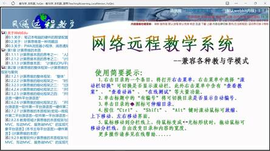 (a)OS平台桌面图标的PWA浏览器小程序 (b) PWA浏览器小程序打开Edge作为浏览器 图 5‑2 本研究案例安装成为OS平台桌面图标的PWA浏览器小程序 PWA环境致力于让Web浏览器宿主中的宿客软件，安装成为本机的PWA浏览器小程序，从而可以接近OS平台应用软件的功能，例如，离线使用、本地文件读写、推送通知、后台同步等等，既具备完全的Internet Web功能，又接近OS平台应用软件的功能，尽量实现教育需求。 二.消息通知 图 5‑2(b)所示标题框架中单击“推送通知”，所有安装了本案例的PWA浏览器小程序，或，Edge浏览器正在线使用本案例主界面的，都将接收到消息通知如图 5‑3所示（图 5‑3中的通知消息界面中，单击…打开的菜单中，可以分别转到Edge浏览器的通知设置、Windows OS的通知设置，进行是否屏蔽等等相关设置）。
图 5‑3 本研究案例的消息通知功能 三.视学听学（眼睛视觉作为主导的读写学习、耳朵听觉作为主导的听说学习） 图 5‑3右上角单击…打开的菜单中，图 5‑4所示选择“大声朗读”，可以朗读当前HTML文档（实现耳朵听觉作为主导的听说学习，单击“语音选项”，可以设置语言、音量等等），当然同时仍然可以阅读当前HTML文档（眼睛视觉作为主导的读写学习，单击…打开的菜单中，可以设置语言翻译、字体大小等等）。 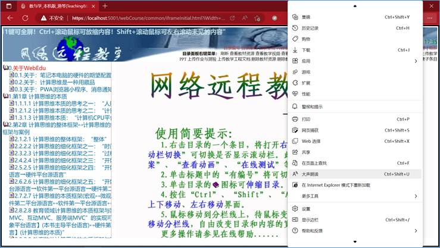 图 5‑4 本研究案例调用Edge浏览器实现视学听学 四.双语自主学习 汉英双语是当前国际化的趋势之一。上述图 5‑4所示可以调用Edge浏览器实现双语视学、双语听学。通过虚拟机软件，则可同时安装汉语界面Windows OS（进而安装各种汉语界面软件，例如，汉语界面的Edge浏览器、Word、VS等等）、英语界面Windows OS（进而安装各种英语界面软件，例如，英语界面的Edge浏览器、Word、VS等等），从而可以调用它们实现双语视学功能。 |
|||||||||||||||
|
“教育软件案例中途”事件之一的“客户端MVC的视图V(一个平台的五个种类)选用的四个平台语言、互动MVC的控制C(一个平台的二个种类)选用的四个平台语言、服务端MVC的模型M(五个平台)选用的四个平台语言”的需求：【例如，“教育者服务端登录”使用“客户端的Web浏览器宿主”的“视图V”，通过“互动”的“控制C”，上传事先编辑好的.docx、.pptx、.mp4三种主要教育教学媒体，成为目录条目链接的“Web服务器宿主”的“模型M”，以供学育者客户端登录后浏览学习自测。即，教育资源目录导航、教育资源上传、学育者客户端登录后浏览学习自测的键盘鼠标事件】
|
|||||||||||||||
|
上述需求可以细化如下： 一.教育者服务端基于“教育视图V”目录导航教学，学育者客户端学习 本表图 5‑4中，可如图 5‑6所示，教育者服务端目录导航教学，学育者客户端目录导航学习。 · 图 5‑6(a)所示，系统菜单面板线性条目导航系统相关设置、资源搜索等等功能。 · 图 5‑6(a)所示，目录面板树型结构导航方式，隐喻实现教材的目录层级导航。例如，章节名称、数字编号等等。 · 图 5‑6(a)所示，内容面板，呈现目录面板树型目录单击任一条目所对应的内容。 · 图 5‑6(b)所示，教育者服务端登录可以在线编辑树型目录。包括查增改删条目、修改条目字符、升级降级条目，等等。学育者客户端登录则只允许查看目录。 · 图 5‑6(c)所示，可以搜索教材资源，并单击跳转到相应目录，进而导航该教材资源所对应的PPT资源、视频资源、自测资源。 · 图 5‑6(d)所示，可以概论目录中所有条目现有的教材资源、PPT资源、视频资源、自测资源是否已上传。
(a) 系统菜单面板、目录面板 、内容面板
(b)教育者服务端登录可以在线编辑目录 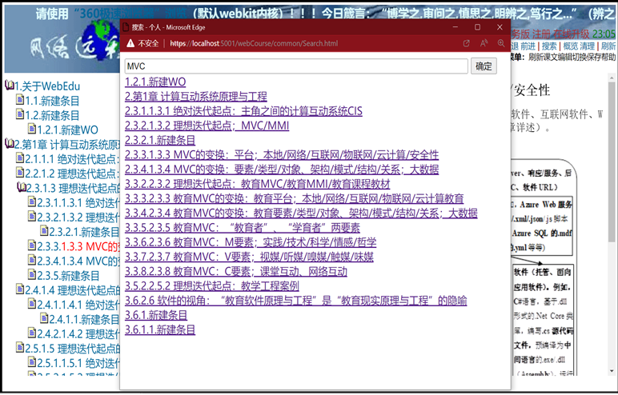 (c) 教材资源搜索 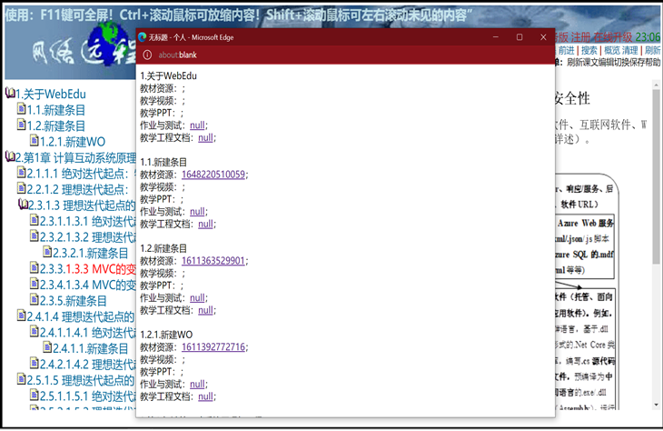 (d)目录条目现有教材、PPT、视频、测验概览 图 5‑6 教育者服务端基于“教育视图V”目录导航教学，学育者客户端学习 二.教育者服务端基于“教育视图V”目录导航上传字符媒体主导的.doc教材文件，学育者客户端学习 图 5‑6(b)中，可如图 5‑7所示，教育者服务端目录导航上传教材.doc文档，学育者客户端在线浏览学习。 · 图 5‑7(a)所示，目录面板中右击目录的一个条目，右击菜单中选择“上传教材资源”。 · 图 5‑7(b)所示，单击“选择文件”。 · 图 5‑7(c)所示，导航到教材的.doc或docx文件，提交后，.doc或docx文件将被上传到对应的目录条目，并被自动转换成为.html文件。以供教育者服务端浏览目录条目所对应的教材进行该部分的教学，学育者客户端浏览目录条目所对应的教材进行该部分的学习。 · 图 5‑7(d)所示，目录条目所对应的教材的浏览结果。 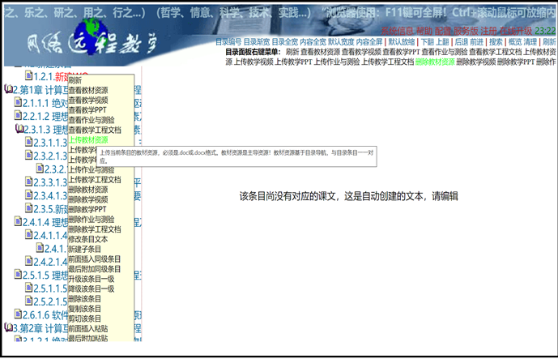 (a) 右击目录的一个条目，“上传教材资源” 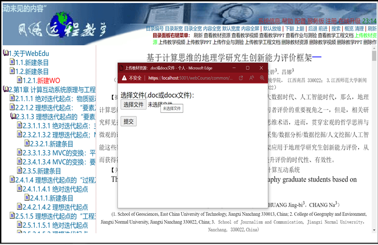 (b) 选择文件
(c) 导航到教材的.doc或.docx文件，提交 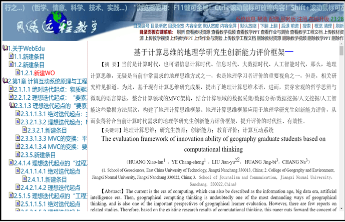 (d) 目录条目所对应的教材的浏览结果 图 5‑7 教育者服务端基于“教育视图V”目录导航上传字符媒体主导的.doc教材文件，学育者客户端学习 三.教育者服务端基于“教育视图V”目录导航上传图像视频媒体主导的.mp4视频文件，学育者客户端学习 图 5‑7(a)中，可如图 5‑8所示，教育者服务端目录导航上传教学视频.mp4文档，学育者客户端在线下载学习。 · 图 5‑8 (a)所示，目录面板中右击目录的一个条目，右击菜单中选择“上传教学视频”。 · 图 5‑8 (b)所示，单击“选择文件”。 · 图 5‑8 (c)所示，导航到传教学视频的.mp4文件，提交后，.mp4文件将被上传到对应的目录条目。以供教育者服务端浏览目录条目所对应的教学视频进行该部分的教学，学育者客户端浏览目录条目所对应的教学视频进行该部分的学习。 · 图 5‑8 (d)所示，右击目录条目选择“查看教学视频”浏览结果，或，“查看所有教学视频”按目录中每一个条目自上向下地自动播放所有视频，以便听学。 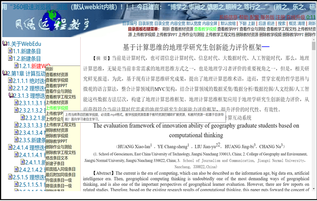 (a) 右击目录的一个条目，“上传教学视频” 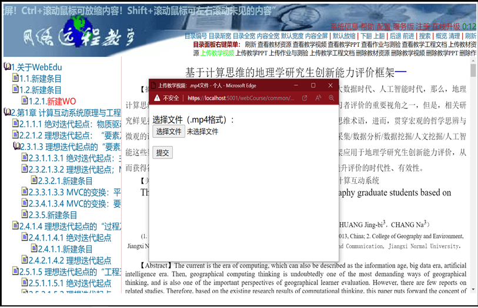 (b) 选择文件
(c) 导航到教学视频的. Mp4文件，提交 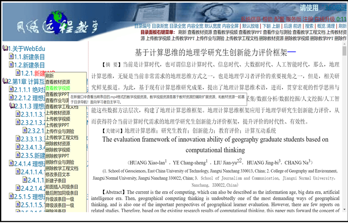 (d) 右击目录条目选择“查看教学视频”浏览结果 图 5‑8 教育者服务端基于“教育视图V”目录导航上传图像视频媒体主导的.mp4视频文件，学育者客户端学习 四.教育者服务端基于“教育视图V”目录导航上传2D3D媒体主导的.ppt演示文件，学育者客户端学习 图 5‑7(a)中，可如图 5‑9所示，教育者服务端目录导航上传教学演示.ppt文档，学育者客户端在线下载学习。 · 图 5‑9 (a)所示，目录面板中右击目录的一个条目，右击菜单中选择“上传教学PPT”。 · 图 5‑9 (b)所示，单击“选择文件”。 · 图 5‑9 (c)所示，导航到传教学PPT的.ppt或.pptx文件，提交后，.ppt或.pptx文件将被上传到对应的目录条目。以供教育者服务端浏览目录条目所对应的传教学PPT进行该部分的演示教学，学育者客户端浏览目录条目所对应的传教学PPT进行该部分的学习。 · 图 5‑9 (d)所示，右击目录条目选择“查看教学PPT”浏览结果。 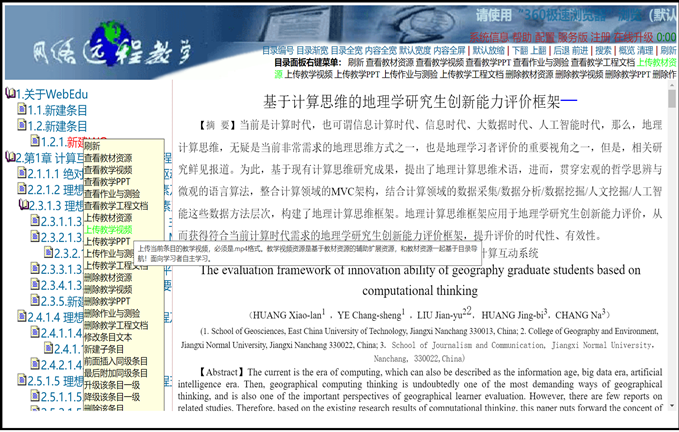 (a) 右击目录的一个条目，“上传教学PPT”
(b) 选择文件
(c) 导航到教学PPT的. ppt或.pptx文件，提交 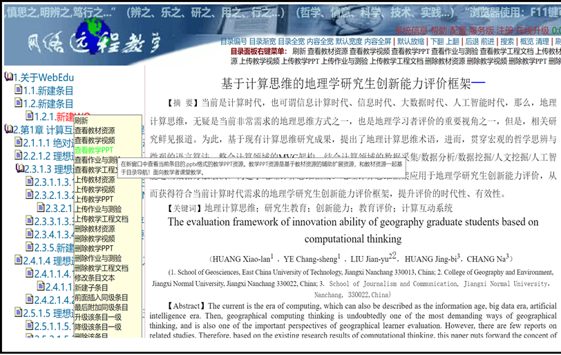 (d) 右击目录条目选择“查看教学PPT”浏览结果 图 5‑9 教育者服务端基于“教育视图V”目录导航上传2D3D媒体主导的.ppt演示文件，学育者客户端学习 五.教育者服务端基于“教育视图V”目录导航上传字符媒体主导的.doc作业文件，学育者客户端自测 图 5‑7(a)中，可如图 5‑10所示，教育者服务端目录导航上传作业与测验.doc文档，学育者客户端在线自测。 · 图 5‑10 (a)所示，目录面板中右击目录的一个条目，右击菜单中选择“上传作业与测验”。 · 图 5‑10 (b)所示，单击“选择文件”。 · 图 5‑10 (c)所示，导航到基于模板的作业与测验的.doc或.docx文件，提交后，.doc或docx文件将被上传到对应的目录条目，并被自动转换成为.html文件。以供教育者服务端浏览目录条目所对应的作业与测验进行该部分的学育者客户端作业布置或学育者客户端自测，学育者客户端浏览目录条目所对应的作业与测验进行该部分的作业或自测。 · 图 5‑10 (d)所示，右击目录条目选择“查看作业与测验”可以在线作业或自测。 · 图 5‑10 (e)所示，单选题在线自测。更多题型的在线自测正在设计开发之中。 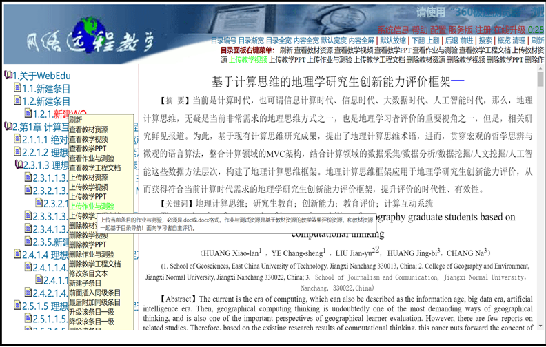 (a) 右击目录的一个条目，“上传作业与测验” 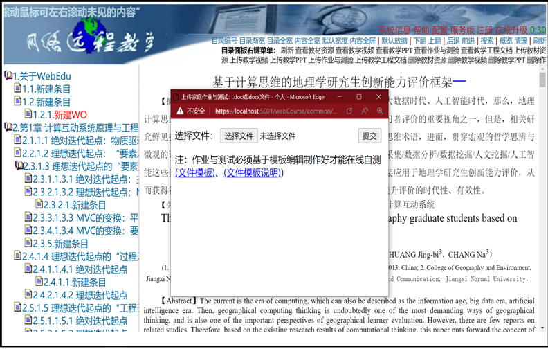 (b) 选择文件 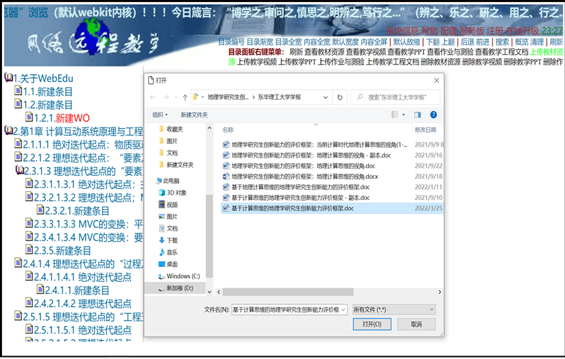 (c) 导航到基于模板的作业与测验的.doc或.docx文件，提交 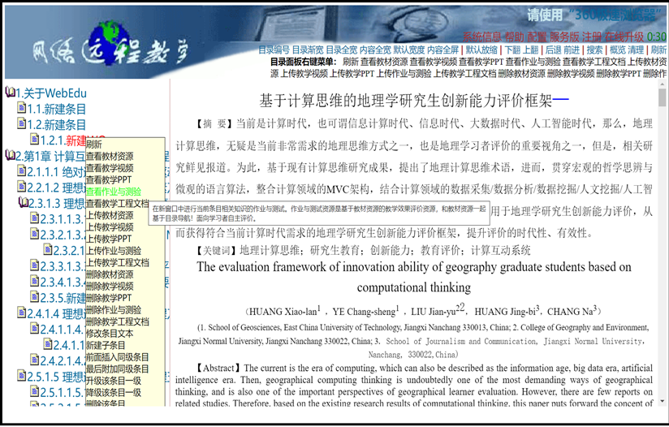 (d) 右击目录条目选择“查看作业与测验”可以在线作业或自测 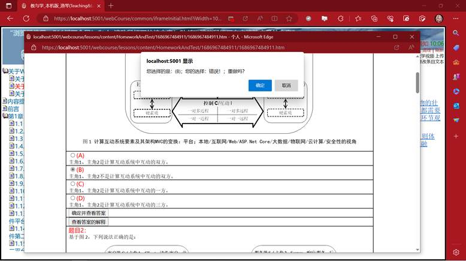 (e)单选题在线自测 图 5‑10 教育者服务端基于“教育视图V”目录导航上传字符媒体主导的.doc作业文件，学育者客户端自测 六.学育者客户端自测数据：MVC案例（5.2.1节所述） 七.学育者客户端自测数据：实践数据读写（数据入库、数据集成、数据进仓）（5.2.2节所述） 八.学育者客户端自测数据：技术信息运用（数据描述统计）（5.2.3节所述） 九.学育者客户端自测数据：科学规律探究（数据推断统计）（5.2.4节所述） 十.学育者客户端自测数据：人文情感交流（人文字符数据推断统计）（5.2.5节所述） 十一.学育者客户端自测数据：哲学智能建构（数据正向推断统计/数据逆向推断检验、数据推断统计的学习优化）（5.2.6节所述） |
|||||||||||||||
|
“教育软件案例中途”事件之一的“客户端MVC的视图V(一个平台的五个种类)选用的四个平台语言、互动MVC的控制C(一个平台的二个种类)选用的四个平台语言、服务端MVC的模型M(五个平台)选用的四个平台语言”的需求：【例如，“教育者服务端登录”使用“客户端的Web浏览器宿主”的“视图V”，通过“互动”的“控制C”，互动“Web服务器宿主”的“模型M”，统计分析评价学育者客户端的学育效果，以便决策自己的后续教育策略。涉及“实践(数据读写)↔技术(信息运用)↔科学(规律探究)↔人文(情感交流)↔哲学(智能建构)”五层次。即，教育者服务端教育数据读写、教育信息运用、教育规律探究、教育人文沟通、教育智能建构的键盘鼠标事件】【本部分使用到SQL SERVER数据服务工具】
|
|||||||||||||||
|
“教育软件案例结束”事件中的“客户端MVC的视图V(一个平台的五个种类)选用的四个平台语言、互动MVC的控制C(一个平台的二个种类)选用的四个平台语言、服务端MVC的模型M(五个平台)选用的四个平台语言”的需求：【例如，“教育者服务端登录”使用“客户端的Web浏览器宿主”的“视图V”，通过“互动”的“控制C”，互动“Web服务器宿主”的“模型M ”，请求登出，退出隐喻“教育者服务端”。即，登出操作的键盘鼠标事件】
|
案例 5‑1中涉及的“教育MVC案例”，可以具体化如案例 5‑2，教育数字思维视角地阐述。3.7.8 节所述，本书的计算机领域选用C#平台语言（MVC架构专用语言CSV/SQL-XML/JSON/Word-RDF/CQL）。
案例 5‑2 所选C#平台语言，实现教育MVC案例【学育者客户端的原始考试成绩数据为例】
|
【注一：本案例的计算机领域具体实现，将在5.2.2节~5.2.6节迭代细化】 【注二：本案例也可选择图形表述，将更体现直观形象性，不过，因为需要映射线性结构数据表，所以在此选择表格表述】 |
||||||||||||||||||||||||||||||||||||||||||||||||
|
|
||||||||||||||||||||||||||||||||||||||||||||||||
|
不闻不若闻之，闻之不若见之，见之不若知之，知之不若行之…… ---------------------------荀况 用理论指导实践，用实践修正理论。实践是检验真理的唯一标准…… -------------------------马克思 反复经验方式地实践数据读写、数据采集、联机事务处理OLTP/数据读增改删、数据录入数据库/集成进入数据仓库，从而，奠定原始数据根基…… ----------------网络资源及其思辨 |
案例 5‑1中涉及的“ 实践数据读写/数据库/数据仓库”，可以具体化如本节，教育数字思维视角地阐述。3.7.8 节所述，本书的计算机领域选用C#平台语言（MVC架构专用语言CSV/SQL-XML/JSON/Word-RDF/CQL）。
一、实现本案例所示的“实践数据读写”，并且可以“客户端MVC”互动“服务端MVC”。
二、教育数据入库（教育数据库）：线性结构的二维的字符串/非字符串的数据表
案例 5‑2抽象出最核心的模型M类型如图 5-13(a)所示，映射数据表如图 5-13(b)所示。
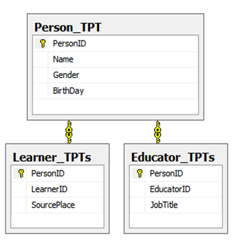 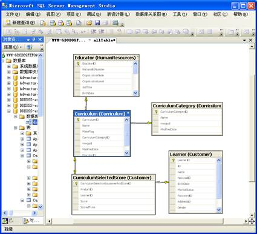
（a）VS宿主中的对象类型 (b) SS数据库宿主中的数据表【也可变换成为继承的引用关系的数据表】
图 5-13 教育数据入库（教育数据库）案例： “对象类型关系”映射“数据表关系”
图 5-13(b)中，线性结构二维数据读写表 5‑1~线性结构二维数据读写表 5‑5所示。
线性结构二维数据读写表 5‑1 ScoreOfSelectedCurriculumByLearner（学育者所选课程分数）
|
ScoreOfSelectedCurriculumByLearnerID (学育者所选课程的编号)(int数据类型) |
CurriculumID (课程编号)(引用Curriculum表的CurriculumID列) |
LearnerID (学号)(引用Learner表的LearnerID列) |
CurriculumSelectedTime (选课时间)（datetime数据类型） |
Score (学育者所选课程的成绩)(real数据类型) |
|
1 |
2 |
660904003 |
2001-07-01 00:00:00.000 |
86 |
|
2 |
1 |
660904005 |
2001-07-02 00:00:00.000 |
72 |
|
… |
… |
… |
… |
… |
线性结构二维数据读写表 5‑2 Learner（学育者）
|
LearnerID (学号) (int数据类型) |
Name (姓名)(nvarchar(50)数据类型) |
Gender (性别)（nchar(1)数据类型） |
SourcePlace (学育者生源地)（nvarchar(100)数据类型） |
IdentityId (学生身份证好)（nvarchar(18)数据类型） |
|
660904003 |
学生1 |
男 |
中国江西南昌 |
362100199510020056 |
|
660904005 |
学生2 |
女 |
中国江西赣州 |
36000019970102003x |
|
… |
… |
… |
… |
|
线性结构二维数据读写表 5‑3 Educator（教育者）
|
EducatorID (教号) (int数据类型) |
Name (姓名)(nvarchar(50)数据类型) |
Gender (性别)（nchar(1)数据类型） |
Place (教师籍贯)（nvarchar(100)数据类型） |
IdentityId (教师身份证好)（nvarchar(18)数据类型） |
CurriculumID (课程编号)(引用Curriculum表的CurriculumID列) |
|
000904003 |
教师1 |
男 |
中国江西南昌 |
362122198811050036 |
|
|
000904005 |
教师2 |
女 |
中国江西赣州 |
36000019781202005x |
|
|
… |
… |
… |
… |
|
|
线性结构二维数据读写表 5‑4 Curriculum（课程）
|
CurriculumID (课程编号) (int数据类型) |
CurriculumName (课程名称)(nvarchar(50)数据类型) |
CurriculumCategoryID (课程类别编号)（引用CurriculumCategory表的CurriculumCategoryID列) |
EducatorID (开课教师编号) （引用Educator表的EducatorID列) |
|
1 |
辩证唯物主义 |
5 |
1 |
|
2 |
自然辩证法 |
5 |
1 |
|
… |
… |
… |
… |
|
3 |
思想品德 |
4 |
2 |
|
4 |
美育 |
4 |
1 |
|
… |
… |
… |
… |
|
5 |
计算科学 |
3 |
3 |
|
6 |
生命科学 |
3 |
4 |
|
… |
… |
… |
… |
|
7 |
计算技术 |
2 |
5 |
|
8 |
生物技术 |
2 |
6 |
|
… |
… |
… |
… |
|
9 |
计算机上机 |
1 |
3 |
|
10 |
生物实验 |
1 |
4 |
|
… |
… |
… |
… |
线性结构二维数据读写表 5‑5 CurriculumCategory（课程类别）
|
CurriculumCategoryID (课程类别编号)(smallint数据类型) |
CurriculumCategoryName (课程类别名称)（nvarchar(50)数据类型） |
|
1 |
实践 |
|
2 |
技术 |
|
3 |
科学 |
|
4 |
情感 |
|
5 |
哲学 |
1.数据库的数据表范的式；1NF、2NF、3NF、BCNF
因为数据库表面向数据的读增改删，所以必须遵守范式（主要涉及表列的设计），不然可能引起数据冗余、读增改删的异常。
面向二维线性的数据表地实现数据与行为时，涉及对象类型与二维线性数据表的映射。即，一个系统影射为一个数据库或多个数据库、系统中的类型影射为数据库中的数据表（类型的属性影射为表列，类型的对象影射为表行，类型的对象集合影射为表行的集合，类型的方法影射为表的操作）（在此的类型一般是指无方法而只有属性的、具有唯一ID编号的、信号需要保存成为文件的实体类型，即，实体类型影射为表，相关的方法则抽取为独立的类型的方法，这些方法影射为表的操作），类型的引用关系映射为表关系。
l“关键(对象属性/表列)”与“非关键(对象属性表/列)”：如果一个属性（或列）能够唯一地标识一个对象实例（或行），则称该属性为关键属性（或关键列），否则为非关键属性（或非关键列）。一个类型（或表）中必须至少含有一个以上的关键属性（或关键列）。例如，线性结构二维数据读写表 5‑2中“LearnerID学号”属性（或列）的值是不允许重复的，所以“LearnerID学号”属性（或列）是关键属性（或关键列），关键属性（或关键列）一般通过下划线标识；“Gender性别”属性（或列）的值是允许重复的，所以“Gender性别”属性（或列）是非关键属性（或非关键列），非关键属性（或非关键列）无下划线标识。
l“主要关键 (对象属性/表列) ”与“非主要关键(对象属性/表列) ”：一个对象类型（或数据表）中必须至少含有一个以上的关键属性（或关键表列），如果含有多个，可选定其中一个作为主要关键属性（或主要关键表列），用来唯一地标识对象实例（或表行）。其他关键则是非主要关键。例如，线性结构二维数据读写表 5‑2中最好指定“LearnerID学号”属性（或表列）作为主要关键属性（或主要关键表列）。
l 第一范式（1NF）
一个表的任何一个表列必须不是其他表列的计算结果，则T∈1NF。1NF主要用来检验表列的存在必要性。
例如，假如有一个表设计为“学生成绩（学号，计算机，英语，艺术，总分）”。其中，“总分”实际上是“计算机”+“英语”+“艺术”，如果保留“总分”，那么任何时候对“计算机”、“英语”、“艺术”的写入，都将必然引起“总分”的相应处理，显然不明智。所以，应该修改为“学生成绩（学号，计算机，英语，艺术）”，也就是说“总分”不能设计为一个列存在，而应该设计为需要时临时计算生成即可。
l 第二范式（2NF）
若表T∈1NF，且任意一个关键表列都能够决定所有的非关键表列，则T∈2NF。2NF主要用来检验表行的唯一性、表的最小粒度性。
例如：假如有一个表设计为“选课（选课编号，课程ID，课程名，学生ID，学生名，选课日期）”。其中，“选课编号”、“课程ID”、“学生ID”都是键列，“课程名”、“学生名”是非键列，“课程ID”这个键列不能决定“学生名”这个非键列，所以不符合2NF。由于不符合2NF，这个选课表会存在如下问题：假设一批学生已经离校很久，他们的选课记录就可能从数据库表中删除，不再维护。但是，根据“选课编号”删除他们的选课记录时，“课程ID”、“课程名”也被删除了，很显然，不符合现实情形，因为这些“课程ID”、“课程名”还须留待在校学生选课。为了使其符合2NF，必须分解为如下三个表：“课程（课程ID，课程名）”；“学生（学生ID，学生名）”；“选课（选课编号，课程ID，学生ID，选课日期）”。同时，“选课（选课编号，课程ID，学生ID，选课日期）”表的“课程ID”列引用“课程（课程ID，课程名）”表的“课程ID”列；“选课（选课编号，课程ID，学生ID，选课日期）”表的“学生ID”列引用“学生（学生ID，学生名）”表的“学生ID”列。
l 第三范式（3NF）
若表T∈2NF，而且任意一个关键表列都不存在传递决定任意一个非关键表列，则T∈3NF。3NF主要用来检验表的最小粒度性。
例如：“学生（学号，姓名，班级编号，班主任）”这个表结构，“学号”能够决定“班级编号”，“班级编号”能够决定班主任，所以存在“学号”通过“班级编号”传递决定“班主任”，所以此表存在数据冗余、可能导致读增改删异常，例如，如果一个学生退学了，该学生的信息就可能删除，不再维护，但是，根据“学号”删除该学生时，同时必然将删除“班级编号”、“班主任”，很显然，不符合现实情形，因为班级、班主任还是存在的。为了使其符合3NF，必须分解为如下二个表：“学生（学号，姓名，班级编号）”、“班级（班级编号，班级名，班主任）”，“学生（学号，姓名，班级编号）”表的“班级编号”列引用“班级（班级编号，班级名，班主任）”的“班级编号”列。
l Boyce-Codd范式（BCNF）
若表T∈3NF，且任意一个关键表列都不存在传递决定任意一个关键表列以及非关键表列，则T∈BCNF。可发现，BCNF是3NF的进一步严格化，表设计中比较少遇见，在此无需深入阐述。
l BCNF<3NF<2NF<1NF，数据库表至少遵守到2NF
由上可知，1NF→2NF→3NF→BCNF，1NF是最基本的规范化程度，BCNF达到了最高的规范化程度。规范化程度越高，越能避免操作异常和数据冗余，但数据更加细碎，数据之间的互相引用增多而性能降低。
2.数据库的数据表的关系；主表、从表；内键、外键；一对一关系、一对多关系、多对多关系
l 表关系/表引用关系
多个表可通过关系（即，引用关系）互相引用起来。例如，线性结构二维数据读写表 5‑1所示的“ScoreOfSelectedCurriculumByLearner（学育者所选课程分数）”表的“CurriculumID(课程编号)”列引用“Curriculum(课程)”表的“CurriculumID”列；“LearnerID(学号)”列引用“Learner（学育者）”表的“LearnerID”列。
l 主表、从表；内键、外键
一个表引用另一个表时，涉及主表、从表和内键、外键的术语。例如，线性结构二维数据读写表 5‑1所示的“ScoreOfSelectedCurriculumByLearner（学育者所选课程分数）”表的“LearnerID(学号)”列引用“Learner（学育者）”表的“LearnerID”列，那么，“Learner（学育者）”表的“LearnerID”列称为“内键”，“ScoreOfSelectedCurriculumByLearner（学育者所选课程分数）”表的“LearnerID(学号)”列称为“外键”；“Learner（学育者）”表称为主表，“ScoreOfSelectedCurriculumByLearner（学育者所选课程分数）”表称为“从表”。
l 一对一关系、一对多关系、多对多关系
一个表引用另一个表时，涉及一对一关系、一对多关系、多对多关系。
一对一关系。例如，如果将线性结构二维数据读写表 5‑2所示的“Learner（LearnerID,Name,Gender,SourcePlace）”表，拆分为“Learner（LearnerID,Name）”和“Learner（LearnerID, Gender,SourcePlace）”二个表，并将两个表的“LearnerID”列互相引用，将形成一对一关系。即，“Learner（LearnerID,Name）”表“LearnerID”列的唯一值，对应“Learner（LearnerID, Gender,SourcePlace）”表“LearnerID”列的唯一值。一对一关系在实际需求中比较少见，主要用于将一个表的列拆分为二个表的列的情形。
一对多关系。例如，线性结构二维数据读写表 5‑1所示的“ScoreOfSelectedCurriculumByLearner（学育者所选课程分数）”表的“LearnerID(学号)”列，引用线性结构二维数据读写表 5‑2所示的“Learner（学育者）”表的“LearnerID”列，“Learner（学育者）”表与“ScoreOfSelectedCurriculumByLearner（学育者所选课程分数）”表之间，是一对多的关系，即，“Learner（学育者）”表“LearnerID”列的唯一值，对应“ScoreOfSelectedCurriculumByLearner（学育者所选课程分数）”表的“LearnerID(学号)”列的多次值。这符合一个学育者必然选择多个课程的需求。
多对多关系。例如，线性结构二维数据读写表 5‑1所示的“ScoreOfSelectedCurriculumByLearner（学育者所选课程分数）”表，与线性结构二维数据读写表 5‑2所示的“Learner（学育者）”表是多对一关系，同时，线性结构二维数据读写表 5‑1所示的“ScoreOfSelectedCurriculumByLearner（学育者所选课程分数）”表，与线性结构二维数据读写表 5‑4所示的“Curriculum（课程）”表是多对一关系，那么，“Learner（学育者）”表与“Curriculum（课程）”表之间，间接地存在多对多关系，而将他们联接起来的“ScoreOfSelectedCurriculumByLearner（学育者所选课程分数）”表，通常称为联接表。这符合一个学生可以选择多门课程，多个学生可以选择同一门课程的需求。
三、教育数据读增改删
线性结构二维数据读写表 5‑1~线性结构二维数据读写表 5‑5中的数据，主要面向读增改删，例如图 5‑14所示。
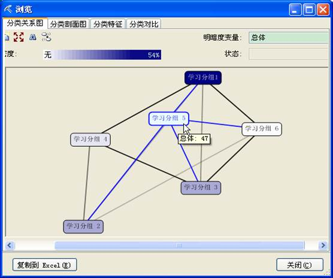
图 5‑14 数据库数据的读增改删的案例：SSMS客户读增改删SSDE服务的数据
四、教育数据集成进仓（教育数据仓库）：数据集成转换包
数据读写入库之后，如果需要，进一步数据集成进仓（作为统计学数据的根基），分别实现下述的技术信息运用、科学规律探究、人文情感交流、哲学智能建构。
数据库中的数据（线性结构二维数据读写表 5‑1~线性结构二维数据读写表 5‑5），需要定期集成转换到数据仓库（线性结构二维信息统计表 5‑6至线性结构二维信息统计表 5‑11），一般是基于数据库软件开发软件包实现。一个SSIS数据集成项目开发数据集成转换包可如图 5‑15所示。
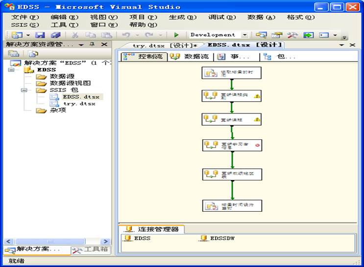
图 5‑15 数据库中的数据定期集成转换到数据仓库的案例：SSIS数据集成项目开发数据集成转换包
图 5-13(b)所示数据库→图 5‑15所示SSIS数据集成项目开发数据集成转换包OLDI（On-Line Data Integration，中文意译为“联机数据集成”）→图 5‑16所示教育数据仓库。
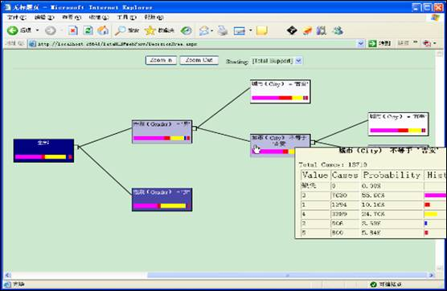
图 5‑16教育数据仓库案例：数据进仓/数据集成转换/数据统计化/OLDI；数据仓库表、度量值表、维度表及其关系
图 5‑16所示教育数据仓库案例，根据OLAP（On-Line Analytical Processing，联机分析处理）数据仓库原理而设计（OLTP数据库与OLAP数据仓库之间涉及多种转换。例如，OLTP数据表中的“Time(时间)”字段往往是“年-月-日”格式，而需要分拆转换为OLAP数据表中的“年份”、“学期”两个字段，从而便于各种年份、学期的多维度、层次化统计分析。数据仓库表的列/字段也必须包含主键，但不一定需要遵守1NF、2NF、3NF、BCNF等范式），以便实现只读式的数据多维分析、数据挖掘等，从而获取教育决策支持信息。
图 5‑16所示数据仓库中的6个数据表，可如“线性结构二维信息统计表 5‑6”~“线性结构二维信息统计表 5‑11”所示。
线性结构二维信息统计表 5‑6 MeasureScoreOfSelectedCurriculumByLearner（学育者所选课程成绩度量值表）
|
ScoreOfSelectedCurriculumByLearnerID (学习者所选课程的编号)(int数据类型) |
CurriculumID (课程编号)(引用DimCurriculum表的CurriculumID列) |
LearnerID (学号)(引用DimLearner表的LearnerID列) |
CurriculumSelectedTimeID (选课时间编号)（引用DimCurriculumSelectedTime表的CurriculumSelectedTimeID列) |
Score (学习者所选课程的成绩)(real数据类型) |
|
1 |
2 |
660904003 |
2 |
86 |
|
2 |
1 |
660904005 |
2 |
72 |
|
… |
… |
… |
… |
… |
线性结构二维信息统计表 5‑7 DimCurriculum（课程维度表）
|
CurriculumID (课程编号) (int数据类型) |
CurriculumName (课程名称)(nvarchar(50)数据类型) |
CurriculumCategoryID (课程类别编号)（引用DimCurriculumCategory表的CurriculumCategoryID列) |
|
1 |
辩证唯物主义 |
5 |
|
2 |
计算技术 |
2 |
|
… |
… |
… |
线性结构二维信息统计表 5‑8 DimCurriculumCategory（课程类别维度表）
|
CurriculumCategoryID (课程类别编号)(smallint数据类型) |
CurriculumCategoryName (课程类别名称)（nvarchar(50)数据类型） |
|
1 |
实践 |
|
2 |
技术 |
|
3 |
科学 |
|
4 |
情意 |
|
5 |
哲学 |
线性结构二维信息统计表 5‑9 DimLearner（学习者维度表）
|
LearnerID (学号) (int数据类型) |
Name (姓名)(nvarchar(50)数据类型) |
Gender (性别)（nchar(1)数据类型） |
LearnerSourcePlaceID (学习者生源地编号)（引用DimLearnerSourcePlace 表的LearnerSourcePlaceID列) |
|
660904003 |
学生1 |
男 |
1 |
|
660904005 |
学生2 |
女 |
2 |
|
… |
… |
… |
… |
线性结构二维信息统计表 5‑10 DimLearnerSourcePlace（学习者生源地维度表）
|
LearnerSourcePlaceID (学习者生源地编号)(int数据类型) |
City (城市)（nvarchar(50)数据类型) |
Province (省区)（nvarchar(50)数据类型) |
|
1 |
南昌 |
江西 |
|
2 |
赣州 |
江西 |
|
… |
… |
… |
线性结构二维信息统计表 5‑11 DimCurriculumSelectedTime（课程考试时间维度表）
|
CurriculumSelectedTimeID (选课时间编号) (int数据类型) |
CalendarYear (年份)（smallint数据类型） |
CalendarSemester (学期)（tinyint数据类型） |
|
1 |
2001 |
1 |
|
2 |
2001 |
2 |
|
… |
… |
… |
“线性结构二维信息统计表 5‑6”至“线性结构二维信息统计表 5‑11”可概述如下：
l 数据仓库、数据库的技术实现是相同的，只是表结构的设计不同而已，数据库面向数据读写采集，数据仓库面向只读分析。数据仓库主要为后述的数据多维分析、数据挖掘奠定数据基础。数据仓库一般遵守数据库表范式的2NF，而不必遵守1NF、3NF、BCNF。
l 数据仓库表，从以度量值为主还是以维度为主的视角，可又分为度量值表（如线性结构二维信息统计表 5‑6所示的MeasureScoreOfSelectedCurriculumByLearner表）、维度表（如线性结构二维信息统计表 5‑7所示的DimCurriculum 表、线性结构二维信息统计表 5‑8所示的DimCurriculumCategory表、线性结构二维信息统计表 5‑9所示的DimLearner表、线性结构二维信息统计表 5‑10所示的DimLearnerSourcePlace表、线性结构二维信息统计表 5‑11所示的DimCurriculumSelectedTime）。
l 度量值是分析时的应变量，在此如线性结构二维信息统计表 5‑6所示MeasureScoreOfSelectedCurriculumByLearner表的“Score（学习者所选课程的成绩）”列的值。
l 维度是分析时的自变量，在此如线性结构二维信息统计表 5‑7所示DimCurriculum 表、线性结构二维信息统计表 5‑8所示DimCurriculumCategory表、线性结构二维信息统计表 5‑9所示DimLearner表、线性结构二维信息统计表 5‑10所示DimLearnerSourcePlace表、线性结构二维信息统计表 5‑11所示DimCurriculumSelectedTime表中的各列的值。维度常常层次化，例如，线性结构二维信息统计表 5‑11所示DimCurriculumSelectedTime中的“CalendarYear（年份）”列、“CalendarSemester（学期）”列形成了“学习者选课时间的年份、学期的层次”；又如，线性结构二维信息统计表 5‑10所示DimLearnerSourcePlace表的“Province（省份）”列、“City（城市）”列形成了“学习者生源地的省份、城市的层次”，从而可实现不同“Province（省份）”、“City（城市）”、“CalendarYear（年份）”、“CalendarSemester（学期）”维度的“Score（学习者所选课程的成绩）”度量值的多维、层次化分析。
|
“技术在很大程度上依赖于科学状况，那么科学状况却在更大的程度上依赖于技术的状况和需要……” -----------------恩格斯 “技术是科学真理的开显方式，现代科学的本质在于现代技术……” -----------------海德格尔 基于实践数据读写的原始数据，联机分析处理OLAP/统计分析数据意义（信息）/数据规律运用，从而，运用现有规律去解决实际问题……构建求和、求平均值等等描述统计算法库…… ------------------网络资源及其思辨 |
案例 5‑1中涉及的“ 技术信息运用/描述统计/信息提取”，可以具体化如本节，教育数字思维视角地阐述。3.7.8 节所述，本书的计算机领域选用C#平台语言（MVC架构专用语言CSV/SQL-XML/JSON/Word-RDF/CQL）。
一、 实现本案例所示的“技术信息运用”，并且可以“客户端MVC”互动“服务端MVC”。
数据进仓之后，可以进一步将数据仓库中的数据，影射为OLAP多维分析数据集数据仓库映射OLAP多维分析数据集/规律运用/数据只读分析/描述统计，调用平台语言内置的功能或者自创方扩展功能，实现“技术信息运用”。例如基于C#语言的System.Math对象类型、基于SQL语言的SUM函数，等等），实现只读式的多维、层次化分析（求和、求平均值，等等）[[6]]、[[7]]、[[8]]
（1） 求和、求平均值、中位数、众数、极差
S= 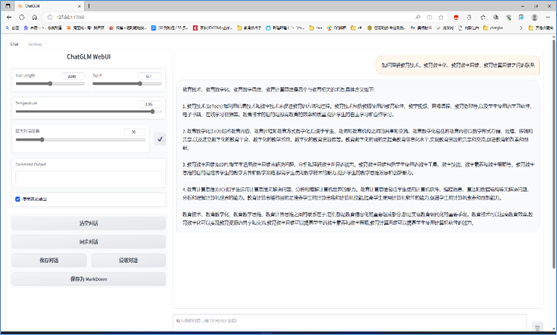
公式 5‑1求和
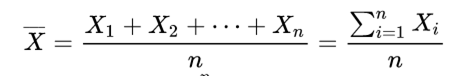
公式 5‑2求平均值
中位数：将一组数据按照从小到大的顺序排列，然后其中间的数值就是中位数，如果中间存在两个数值，则计算中间两个数的平均值就是这组数据的中位数。
众数：一组数据中出现次数最多的数值是这组数据的众数。
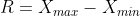
公式 5‑3 极差
极差：一组数据中的最大值减去最小值，用来衡量一组数据的离散程度。
（2） 期望
期望是试验中每次可能结果的概率乘以结果的总和，随着重复次数接近无穷大，平均值几乎肯定地收敛于期望值。
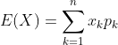 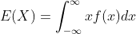
（a）连续型随机变量的期望值 (b) 离散型随机变量的期望值
公式 5‑4连续型随机变量的期望值、离散型随机变量的期望值
（3） 总体方差、样本方差、标准差
总体方差：用来表示随机变量与其期望之间的离散程度。方差是用来衡量一组数据波动大小的量，方差越大，表明这组数据偏离平均数越大，即波动越大，数据越不稳定；反之，方差越小，表明这组数据分布比较集中，各数据偏离平均数越小，即波动越小，数据越稳定．方差大于等于零，但是没有上限。
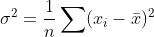
公式 5‑5总体方差
样本方差：是对总体方差的估计，为了得到总体方差的无偏估计值，所以会对样本方差进行修正。因为对于抽样来说，抽样得到的样本均值往往和总体均值存在一定的偏差，这就会导致分子上的平方和的计算偏小，为了使样本方差接近总体方差，将分母变为n-1得到较大的样本方差，使样本方差更接近总体方差值。
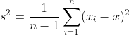
公式 5‑6样本方差
标准差：标准差可以反应数据的离散程度，与方差不同的是它可以反应出数据偏离平均数的距离的平均数。真正能反映稳定性的是标准差，因为它的单位和数据的单位是一样的，而方差的单位是数据单位的平方，所以方差有点夸大波动的情况。标准差大于等于零，但是没有上限。标准差的取值一般是以0为中心，向左右延伸的理想正态分布的偏差，一般来说，标准差的取值范围在0到5之间，其中0表示数据点分布在均值附近，上限5表示样本离散偏大，变动幅度异常大。一般来说，当标准差的取值在 1到 2之间时表示数据分布比较集中;当标准差的取值超过 2 时，表明数据分布不够集中，处于分散态势;当标准差取值超过 3 时，则意味着数据量不尽情况下，变动性较大，极有可能出现异常状况，这时就要格外重视数据分析结果的可靠性和可信度。
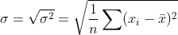
公式 5‑7 标准差
（4） 正态分布
正态分布曲线又称为钟型曲线，两头低中间高。正态分布的概率密度函数如下。
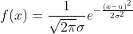
公式 5‑8正态分布
（5） 归一化
归一化使不同量纲的属性值处于同一数值量级，减少方差大的特征的影响，使模型更准确。对于机器学习来说，可以加快学习算法的收敛速度。
A. 缩放到0和1之间（Standardization——MinMaxScaler()），即，min-max归一化。
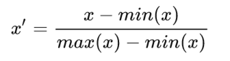
公式 5‑9 min-max归一化
B. 缩放到-1和1之间（Standardization——MaxAbsScaler()）。
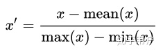
公式 5‑10 Standardization归一化
C. 缩放到0和1之间，保留原始数据的分布（Normalization——Normalizer()）其中 和 分别是样本数据的均值（mean）和标准差（std）。
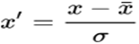
公式 5‑11 Normalization归一化
二、教育数据描述统计的基于数据仓库的多维数据集设计
为了实现教育信息分析，必须首先基于图 5‑16所示的教育数据仓库，设计并构建教育多维数据集，本教育多维数据集设计如图 5‑17所示。分析目标值（度量值）主要包含平均分、选课学生数、最高分、最低分等；分析维度主要包含时间（年份、学期）、生源地（省区、城市）、课程（所有课程）、课程类别（五个课程类别）、学生性别（男、女）等等。
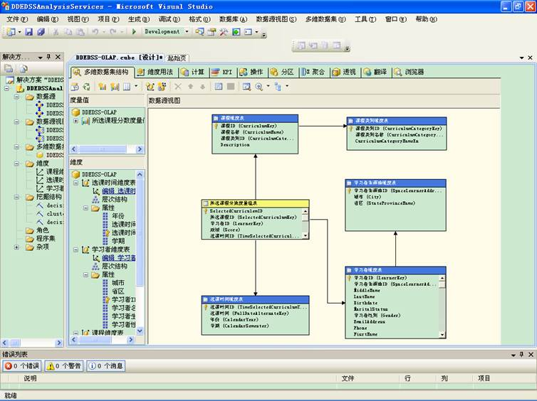
图 5‑17 教育多维数据集设计：基于SSAS宿主
图 5‑17所示教育多维数据集中，还隐含着学习者地域、选课时间、课程三个重要的维度属性关系，分别设计如图 5‑18、图 5‑19、图 5‑20所示。
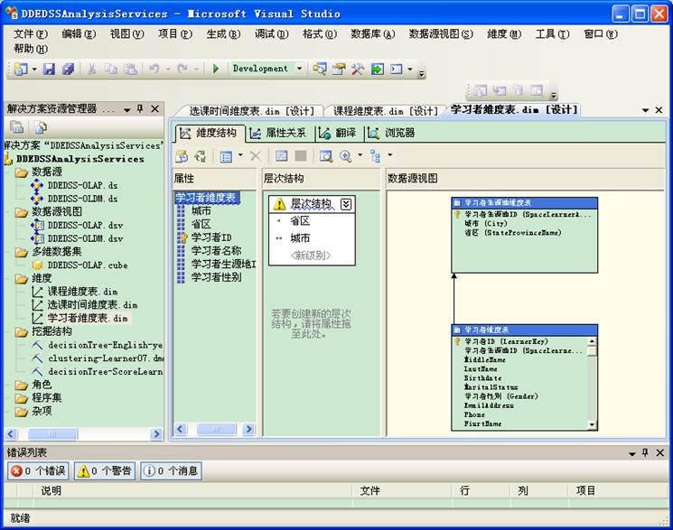
图 5‑18 学习者地域维度层次关系设计：基于SSAS宿主
图 5‑18所示学习者地域维度，设计为学习者数据存储在“学习者维度表”中，生源地域数据存储在“学习者生源地维度表”，然后通过外键引用而关联起来。同时设计了省区/城市的层次关系。
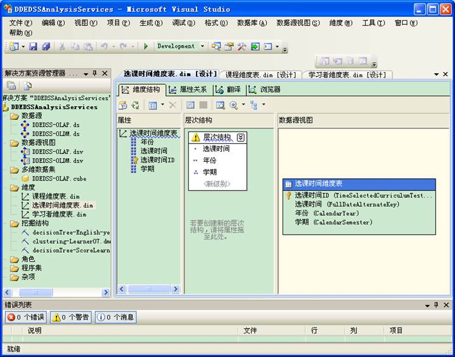
图 5‑19 选课时间维度层次关系设计：基于SSAS宿主
图 5‑19所示选课时间维度，设计为存储在“选课时间维度表”一个表中，同时设计了年份/学期的层次关系。
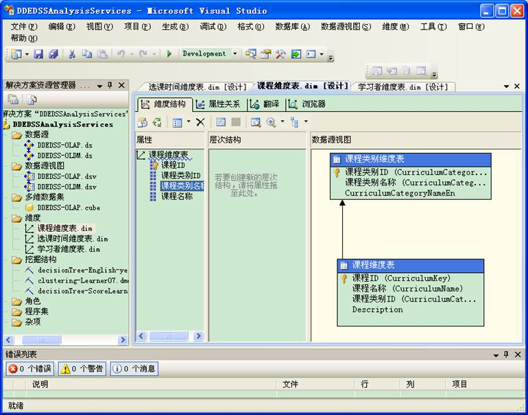
图 5‑20课程维度层次关系设计：基于SSAS宿主
图 5‑20所示课程维度，设计为课程数据存储在“课程维度表”中，课程类别数据存储在“课程类别维度表”，然后通过外键引用而关联起来。
三、教育多维数据分析
图 5‑17所示教育多维数据集的设计，可结合求和、求平均值等各种数据分析算法，实现教育数据多维分析，从而辅助教育决策。如图 5‑21、图 5‑22所示。
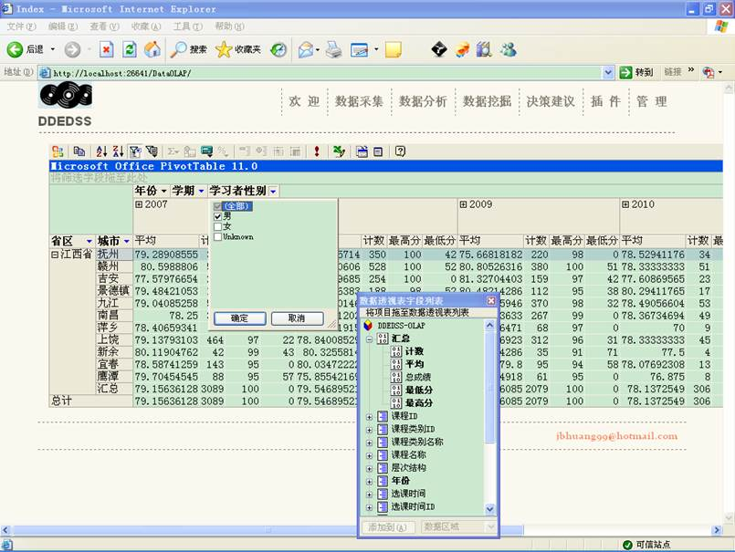
(a)数据表呈现方式
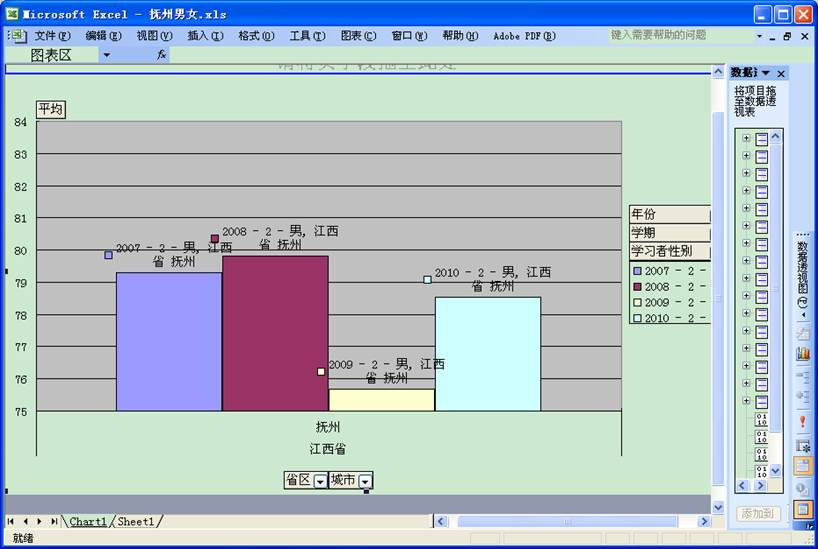
(b)柱型图呈现方式
图 5‑21 江西省抚州市男生各年份（2007、2008、2009、2010）的所有课程平均成绩
(a)数据表呈现方式
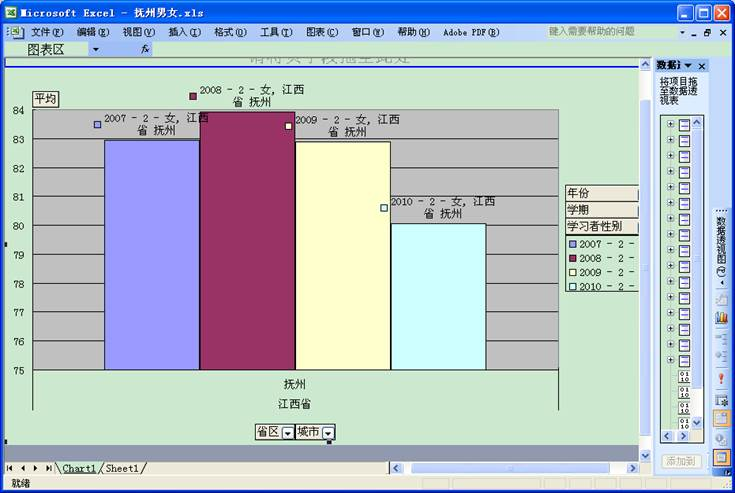
(b)柱型图呈现方式
图 5‑22 江西省抚州市女生各年份（2007、2008、2009、2010）的所有课程平均成绩
l图 5‑21中，将字段列表拖动到多维分析框中，可根据决策者的需求，互动式地实现各种分析。例如，可查看江西省抚州市男生各年份（2007、2008、2009、2010）的所有课程平均成绩分别是（79.29、79.82、75.67、78.53）。
l图 5‑22中，将字段列表拖动到多维分析框中，可根据决策者的需求，互动式地实现各种分析。例如，可查看江西省抚州市女生各年份（2007、2008、2009、2010）的所有课程平均成绩分别是（82.93、83.93、82.87、80.06）。
l 上述比较可发现，抚州市女生的历年平均分都高于男生，必须多关注抚州市这个生源地男生的学习积极性。可通过问卷调查等方式，了解男生成绩普遍低于女生的原因。
|
“只有顺从自然，才能驾驭自然……” -----------------培根 “真理的大海，让未发现的一切事物躺卧在我的眼前，任我去探寻…….” -----------------牛顿 科学就是发现“规律”，因为规律本来就在那，只是大家没有注意到，没有发现它。 -----------------佚名 基于实践数据读写的原始数据， 数据挖掘DM/统计推断预测/创新发现规律……构建聚类、分类等等推断统计算法库…… ------------------网络资源及其思辨 |
案例 5‑1中涉及的“ 科学规律探究/推断统计/规律预测”，可以具体化如本节，教育数字思维视角地阐述。3.7.8 节所述，本书的计算机领域选用C#平台语言（MVC架构专用语言CSV/SQL-XML/JSON/Word-RDF/CQL）。
一、 实现本案例所示的“科学规律探究”，并且可以“客户端MVC”互动“服务端MVC”。
数据进仓之后，可以进一步将数据仓库中的数据影射为数据挖掘结构数据仓库映射规律挖掘结构/规律预测/数据挖掘/数据只读挖掘/推断统计，实现只读式数据挖掘（如聚类、分类/回归，等等），也常称为知识发现、推断统计、OLDM。
教育数据挖掘，是从海量数据中，发现所隐含的一些规律，本质上是聚类、分类/回归。教育数据挖掘可用来预测推断一些教育规律，但毕竟是推断，是大概率确定性的。数据挖掘的本质，是对海量数据之间所存在的相关关系的求算。而前述的多维分析，则是函数关系的求算。函数关系是一种确定性的数学关系，相关关系是一种大概率确定性的数学关系，是基本趋势的推断。
一系列数据之间具有一定的关系，但又不存在函数关系那样完全精确规律的关系时，这些数据关系称为相关关系，也称为相似度，常用数据之间的距离或相关系数来衡量。距离、相关系数有多种计算公式，各有其适用的数据情形，例如Mahalanobis距离计算如公式 5‑12所示，即，对于任意两个包含一系列数据属性的对象实例Xi= 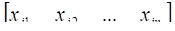 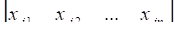
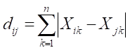
公式 5‑12 Mahalanobis距离计算
基于数据点之间的距离，可以通过一定的算法，实现如下基本目标：聚类/降维、逻辑回归（分类）/线性回归。
二、聚类/降维
即，事先指定需求分组的组数，不指定类别划分的参照量，然后寻求算法，将这些数据点，根据距离关系，科学地分成需求的组数，如图 5‑23中所示，所有数据点基本上分为了五组。
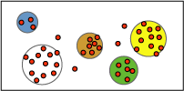
聚类/降维，在教育领域，隐含着计算机辅助划分学生小组、班级等方面的应用意义，例如，基于全体学育者的成绩、性别、生源地等数据，指定组数，将相似的学育者分到一组，有利于互助学习，统一规划教学内容。
三、逻辑回归(分类)/线性回归
逻辑回归/线性回归本质上也是分出类别，但是区别于聚类/降维，必须预先指定类别划分的参照量。当参照量是离散值时，分类的结果是类别；当参照量是连续值时，分类的同时，还可能为每个分类生成一个回归公式[[1]]。
图 5‑24 (a)是逻辑回归/线性回归的结果的线条表述，可发现所有数据分为了两个类别。图 5‑24(b)是逻辑回归/线性回归的结果的回归公式表述，即一类的回归公式是y=0.5x+5，另一类别的回归公式是y=0.25x+8.75。
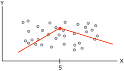 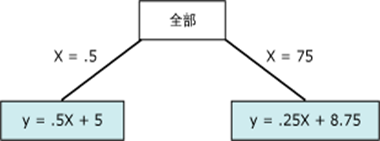
（a） 逻辑回归(分类)/线性回归的结果的线条表述 （b）逻辑回归(分类)/线性回归的结果的回归公式/函数表述
图 5‑24逻辑回归(分类)/线性回归的图示
逻辑回归(分类)/线性回归，在教育领域，可用来根据全体学育者的历年课程成绩、生源地、性别，计算出成绩随年份变化的函数，该函数就可计算预测今后的成绩走向，等等。如果成绩只是及格、不及格两个离散值，则无法生成函数，而只能将全体学育者分到及格的类别，还是不及格的类别，从而预测某一类学生是否能及格。这些，都可为某类学生应该如何针对性地实施教学，提供参考。
四、教育数据推断统计的基于数据仓库的数据挖掘结构：聚类算法教育应用案例：根据学习者成绩，对学习者聚类，可为学习小组、班级划分提供参考
为了实现挖掘目标：“根据学习者成绩，对学习者聚类，从而为学习小组、班级划分提供参考”，必须首先基于图 5‑16所示教育数据仓库，设计挖掘结构，如图 5‑25所示。
图 5‑25 教育数据挖掘结构设计示例：聚类算法挖掘结构
图 5‑25所示挖掘结构中，各属性的设计如下。
l学习者编号(Learner Key)。
l分数(Score):即，学习者分数。
l所选课程编号(Selected Curriculum Key):即，分数所对应的课程编号。
五、教育挖掘模型建立：赋予聚类算法，构建聚类算法挖掘模型
图 5‑25所示挖掘结构，赋予算法，可形成挖掘模型。在此是赋予聚类算法（Microsoft_Clustering），挖掘模型如图 5‑26所示。
图 5‑26 教育数据挖掘模型设计示例：聚类算法挖掘模型
图 5‑26所示挖掘模型中，各属性的设计如下。
l学习者编号(Learner Key):键属性(Key)。即，用于唯一标识一个记录。
l分数(Score):输入属性(Input)。即，学习者分数设置为学习者的一个属性，该属性用于预测学习者聚类分组时的参数。
l所选课程编号(Selected Curriculum Key):键属性(Key)。即，分数所对应的课程编号。
l注：聚类算法可不指定预测属性。
六、教育挖掘模型浏览
图 5‑26所示挖掘模型的浏览结果如图 5‑27所示。
图 5‑27教育数据挖掘模型浏览示例：聚类算法实现学习分组
图 5‑27中，鼠标移动到学习分组5上，可显示该分类一共包含47名学习者，意味着他们的学习成绩情况是比较相似的一组。该分类的右击菜单中选择“钻取|模型”，可显示该47名学习者（同时包括采样时确定在该组的学习者）的学号及其课程分数数据，如图 5‑28所示。从而实现计算机辅助分组、分班（是指同质性的分组，如果要实现异质性的分组，该系统尚无法直接实现，需要同质性分组后，再将不同的组手工分拆。或者，同质性分组后，小组成员自行寻找异质同学，组成虚拟学习社区，互补学习）。
图 5‑28教育数据挖掘模型浏览示例：学习分组5的学习者学号及其课程分数数据
七、回归：根据历年来学习者成绩，回归学习者成绩随时间变化的函数，该函数可用来预测今后的成绩走势
(1)教育挖掘结构构建：基于数据仓库，构建面向挖掘目标的挖掘结构
为了实现挖掘目标：“根据历年来学习者成绩，回归学习者成绩随时间变化的函数，该函数可用来预测今后的成绩走势”，必须首先基于图 5‑16所示教育数据仓库，设计挖掘结构，如图 5‑29所示。
图 5‑29 教育数据挖掘结构设计示例：回归算法挖掘结构
图 5‑29所示挖掘结构中，各属性的设计如下。
l年份(Year)：即，成绩的年份。
l分数(Score):即，学习者分数。
l所选课程编号(Selected Curriculum Key):即，分数所对应的课程编号。
(2)教育挖掘模型建立：赋予回归算法，构建回归算法挖掘模型
图 5‑29所示挖掘结构，赋予算法，可形成挖掘模型。在此是赋予决策树分类/回归算法（Microsoft_Decision_Trees），挖掘模型如图 5‑30所示。
图 5‑30 教育数据挖掘模型设计示例：回归算法挖掘模型
图 5‑30所示挖掘模型中，各属性的设计如下。
l年份(Year): 输入属性(Input)。即，成绩的年份。
l分数(Score):输入属性(Input)。即，学习者分数设置为学习者的一个属性，该属性用于预测学习者聚类分组时的参数。
l所选课程编号(Selected Curriculum Key):键属性(Key)。即，分数所对应的课程编号。
(3)教育挖掘模型浏览
图 5‑30所示挖掘模型，浏览结果如图 5‑31所示。
图 5‑31决策树回归：两届学习者英语成绩随时间变化的回归函数
图 5‑31是对第一届、第二届学习者的两次英语成绩随年份的回归。回归方程结果是：Score = 73.848-2.586*(Year-2006.302)。因为原始数据只有两届，所以回归方程只有一个，如果有多届成绩，还可能回归形成一个线性方程。
通过回归方程，可计算成绩随年份的走势。图 5‑31所示回归函数，四年之间的趋势将如图 5‑32所示，是递减的，表明英语成绩在下滑，需要加强英语课程教学。可基于曲线，合理预定分数目标，例如，第2年预定78平均分目标、第3年预定77平均分目标，逐步达到防止下滑的愿景。此外，可根据具体需求，增加地域、性别等维度，进行回归。
图 5‑32两届学习者英语成绩随时间变化的函数曲线
|
“天性好比种子，它既能长成香花，也可能长成毒草，所以人应当时时检查，以培养前者而拔除后者……” -----------------培根 “知之者不如好之者，好之者不如乐之者……” -----------------孔丘 “我们可以把马儿牵到河边，却无法强迫它喝水……” -----------------佚名 基于实践数据读写的原始数据， 字符数据挖掘CDM /统计推断字符数据中的人性共鸣、人文意义、社会意义……构建面向人文字符意义的聚类、分类等等推断统计算法库…… ------------------网络资源及其思辨 |
案例 5‑1中涉及的“人文情感交流/人文统计/人文挖掘”，可以具体化如本节，教育数字思维视角地阐述。3.7.8 节所述，本书的计算机领域选用C#平台语言（MVC架构专用语言CSV/SQL-XML/JSON/Word-RDF/CQL）。
一、 实现本案例所示的“人文情感交流”，并且可以“客户端MVC”互动“服务端MVC”。
公式 5‑12所示Mahalanobis距离计算、图 5‑23所示聚类图示、图 5‑24逻辑回归(分类)/线性回归的图示，应用于人文字符，就可以实现人文情感交流。人文情感交流一种大概率确定性的数学关系，是基本趋势的推断。
二、教育数据人文推断统计的基于数据仓库的人文挖掘结构
数据进仓之后，可以进一步构建情感挖掘结构，实现数据仓库映射字符规律挖掘结构/人文规律发现/字符只读挖掘/人文推断统计。教育领域的人文情感交流的一个案例如下（决策树分类算法预测不同生源地的男性、女性学习者的选课倾向。根据学习者所选课程，预测学习者生源地、性别等属性与选课倾向的关系）。
为了实现挖掘目标：“根据学习者所选课程，预测学习者生源地、性别等属性与选课倾向的关系”，必须首先基于图 5‑16所示教育数据仓库，设计挖掘结构，如图 5‑33所示。
图 5‑33教育数据挖掘结构设计示例：分类算法挖掘结构
图 5‑33所示挖掘结构中，各属性的设计如下。
l所选课程编号(Selected Curriculum ID)。
l城市(City):即，学习者生源地城市。
l性别(Gender):即，学习者性别。
l所选课程类别编号(Selected Curriculum Catogroy)：即所选课程编号所属的课程类别。
(1)教育挖掘模型构建：赋予分类算法，构建分类算法挖掘模型
图 5‑33所示挖掘结构，赋予算法，可形成挖掘模型。在此是赋予决策树分类/回归算法(Microsoft_Decision_Trees)，挖掘模型如图 5‑34所示。
图 5‑34教育数据挖掘模型设计示例：分类算法挖掘模型
图 5‑34所示挖掘模型中，各属性的设计如下。
l所选课程类别编号(Selected Curriculum Catogory ID):预测属性(PredictOnly)。即，课程类别设计为被预测，预测不同城市、性别的学习者选修五种课程类别的概率。
l城市(City):输入属性(Input)。即，城市设置为学习者的一个属性，该属性用于预测课程类别选修时的参数。
l性别(Gender):输入属性(Input)。即，性别设置为学习者的一个属性，该属性用于预测课程类别选修时的参数。
l所选课程编号(Selected Curriculum ID):键属性(Key)。即，用于唯一标识一个记录。
(2)教育挖掘模型浏览
图 5‑34所示挖掘模型，浏览结果如图 5‑35、图 5‑36所示。
图 5‑35决策树分类算法结果查看：男性学习者的选课倾向
图 5‑36决策树分类算法结果查看：女性学习者的选课倾向
l图 5‑35所示，可查看男性学习者的选课倾向。单击“性别(Gender)= '男'”这个分类，可显示男性学习者，选修’1’（实践类课程）的概率是11.17%、’2’（技术类课程）的概率是3.64%、’3’（科学类课程）的概率是55.03%、’4’（情意类课程）的概率是24.33%、’5’（哲学类课程）的概率是5.83%。
l图 5‑36所示，可查看女性学习者的选课倾向。单击“性别(Gender)= '女'”这个分类，可显示女性学习者，选修’1’（实践类课程）的概率是5.87%、’2’（技术类课程）的概率是2.58%、’3’（科学类课程）的概率是42.24%、’4’（情意类课程）的概率是43.92%、’5’（哲学类课程）的概率是5.40%。
l男性、女性学习者的选课倾向比较可发现，男生对实践、技术类的课程更感兴趣，而女生对情意类的课程更感兴趣，这与现实情形基本一致。作为师范类院校，可适当鼓励男生多选修情意类的课程，为今后教育职业发展所需的师生情感交流奠定更多的基础。对于女生，也应该提醒她们克服怕苦怕累的思想，多选修实践、技术类课程，提高动手能力。
|
教学有法、教无定法、贵在得法…… --------------------佚名 世界上本没有绝对的对与错，但是有相对的对与错……。 --------------------佚名 基于实践数据读写的原始数据、统计学数据，正向推断(自主学习生成结果)/逆向推断(检验优化生成结果)，不断训练神经网络层次模型中各个神经元的聚类/分类等等推断统计的权重，从而优化自身整体的聚类/分类等等推断统计能力，反过来又指导模型M的五个平台。所以也是终极之争的模型M平台！即，机器学习ML、人工智能AI、数字人、机器人。从而辅助人…… ------------------网络资源及其思辨 现在根本没有“人工智能”，不过是“应用统计学”而已。 --------------------------泰德·姜 |
案例 5‑1中涉及的“哲学智能建构/机器学习/人工智能/数字人/数字教师”，可以具体化如本节，教育数字思维视角地阐述。3.7.8 节所述，本书的计算机领域选用C#平台语言（MVC架构专用语言CSV/SQL-XML/JSON/Word-RDF/CQL）。
（注：本部分的部分图像来自网络搜索，尚需再加工[[9]]）
一、实现本案例所示的“哲学智能建构（ChatGPT/ChatGLM/Copilot为例）”，并且可以“客户端MVC”互动“服务端MVC”。
二、ChatGPT的神经元网络模型Transformer机制
“神经元的Transformer机制”[[10]]，本节中具体化如图 5‑37，并且，教育数字思维视角地阐述。
图 5‑37 ChatGPT的神经元网络模型Transformer机制
三、单词的One-hot张量编码
服务端GPT/ChatGLM接受客户端的提示字符串进行语言处理的时候，单词是最小计算单元，单词需要One-hot单词张量编码[[11]]，即，所有单词映射成为0/1序列（当然，单词中的字符，则还是遵守3.7.4节所述CPU的ASCII-UTF-Base64字符编码）。
据统计英语总共有40-60万单词，常用单词3-4万，普通人掌握3-5千左右就足够应付日常英文互动。中文汉语大概40多万单词，成语2万左右，常用词汇5.5万左右，普通人掌握3-5千左右就足够应付日常汉语互动。下述为了简单叙述原理，假设 files、 find,、my的三个单词量如图 5‑38。
|
files |
find |
my |
|
1 |
0 |
0 |
|
0 |
1 |
0 |
|
0 |
0 |
1 |
图 5‑38 Transformer： 单词的One-hot张量编码
四、单词的one-hot张量编码的向量提取矩阵特定行
使用 one-hot 向量提取矩阵特定行的技巧是 Transformer机制的核心。
下述如下三句自然语言推测为例：
上述中的单词量是七个：
对于上述单词量中的每个单词，它都会预测下一个单词可能是什么。如果“photos”的概率是0.5，“files”的概率是0.3，“directories”的概率就是0.2，则可图 5‑39所示一阶模型表述。
图 5‑39 Transformer： 单词的one-hot张量编码的向量提取矩阵特定行、一阶序列模型
图 5‑39可以矩阵形式表示如图 5‑40。
|
|
directories |
files |
me |
my |
photos |
please |
show |
|
directories |
0 |
0 |
0 |
0 |
0 |
1 |
0 |
|
files |
0 |
0 |
0 |
0 |
0 |
1 |
0 |
|
me |
0 |
0 |
0 |
1 |
0 |
0 |
0 |
|
my |
0.2 |
0.3 |
0 |
0 |
0.5 |
0 |
0 |
|
photos |
0 |
0 |
0 |
0 |
0 |
1 |
0 |
|
please |
0 |
0 |
0 |
0 |
0 |
0 |
0 |
|
show |
0 |
0 |
1 |
0 |
0 |
0 |
0 |
图 5‑40 Transformer：单词的one-hot张量编码的向量提取矩阵特定行、一阶序列模型(矩阵表述)
如果只想知道出现在my之后单词的概率，可以创建一个表示单词 my 的one-hot 向量，并将其乘以转换矩阵，获得下一个单词出现的概率如图 5‑41。
图 5‑41 Transformer：单词的one-hot张量编码的向量提取矩阵特定行、一阶序列模型(矩阵点积)
下述如下二句自然语言推测为例。
上述中的单词量是八个：
对于上述单词量中的每个单词，它都会预测下一个单词可能是什么。如果“battery”的概率是0.4，“program”的概率是0.6，“ran down”的概率就是0.4，“ran please”的概率就是0.6，则可图 5‑42所示二阶模型表述。
图 5‑42 Transformer：单词的one-hot张量编码的向量提取矩阵特定行、二阶序列模型
图 5‑42可以矩阵形式表示如图 5‑43。
图 5‑43 Transformer：单词的one-hot张量编码的向量提取矩阵特定行、二阶序列模型 (矩阵表述)
下述如下二句自然语言推测为例。
在这个例子中，为了确定哪个单词应该在ran之后出现，必须回顾8个单词。可以考虑三阶和高阶模型，但是不明智。在这里，我们放弃了数字权重，而是仅展示与非0权重相关的链路。较大的权重用较粗的线表示，如图 5‑44所示。
图 5‑44 Transformer：单词的one-hot张量编码的向量提取矩阵特定行、带跳过的二阶序列模型
图 5‑44可以矩阵形式表示如图 5‑45。每行不再代表特定点的序列状态。而是，每行代表许多特征之一，可以描述特定点的序列。最近的单词与之前出现的每个单词的组合构成了一个适用行的集合，可能是一个大集合。由于这种意义的变化，矩阵中的每个值不再代表一个概率，而是一个投票。投票将被求和，以便比较推断下一个单词。
图 5‑45 Transformer：单词的one-hot张量编码的向量提取矩阵特定行、带跳过的二阶序列模型(矩阵表述)
可以通过创建屏蔽将无用的特征强制为零。例如，上述示例中，屏蔽除了battery,run 和program,run之外的所有内容。
为了应用Masking，我们将两个向量逐个元素相乘。未屏蔽位置的任何特征活动值将乘以 1 并保持不变。屏蔽位置中的任何特征活动值都将乘以0，从而强制为0。图 5‑46所示。
图 5‑46 Transformer：单词的one-hot张量编码的向量提取矩阵特定行、屏蔽
屏蔽隐藏了run与除battery和program之外的所有内容，只留下重要的内容，屏蔽结果示例如图 5‑47。屏蔽了无用的特征之后，下一个单词的推断变得更加确定。
图 5‑47 Transformer：单词的one-hot张量编码的向量提取矩阵特定行、屏蔽（结果示例）
transformers 是如何找到相关的mask很重要。可以将每个单词的mask向量堆叠成矩阵，并使用最近单词的 one-hot 编码来提取相关mask，图 5‑48所示。
图 5‑48 Transformer：单词的one-hot张量编码的向量提取矩阵特定行、注意力矩阵乘法
五、Prompt工程：提示字符串的序列补全
到目前为止，只探讨了下一个单词推断。有时需要基于一个很长的字符串（序列）（提示）进行推断。给出合适的提示，称为提示工程。案例 5‑3已从使用的视角，进行了提示工程的阐述，可以自主迁移开发视角的提示工程。
六、Transform的更多深入
七、ChatGPT的神经元网络模型
（注：本部分的部分图像来自网络搜索，尚需再加工）
5.2.6节涉及的“神经元的网络模型”，本节中具体化图 5‑49所示，教育数字思维视角地阐述。
图 5‑49 ChatGPT的神经元网络模型
神经元网络模型，是神经元（每个神经元就是一个接受输入计算输出的函数）、神经元个数、神经元的可变权重、神经元之间的结构的组合。目前最先进的文字生成模型，有大概1750亿个神经元，减化如图 5‑49所示。在一个神经网络中，我们总是存在输入和输出层，可能有一个或多个隐藏层。当一个神经网络含有一个以上的隐藏层，就可称为深度学习DL。拥有多个隐藏层的神经网络，相比单一隐藏层的神经网络，统计推断结果更为准确，当然，对计算机的硬件要求更高、软件源码的编写难度更大[[12]]。
· 图 5‑49所示第一层是输入层，包含两个神经元：i1、i2 。还包含一个b1截距项。截距项Bias，也称偏置、偏移量。对于线性函数，例如f(x)=ax+b，当b=0时，函数总是通过原点[0,0]。当我们保持a不变的情况下引入b时，新的函数总是相互平行的。那么，可以说，系数a决定了函数的角度，而分量b决定了函数与x轴的交点。如果没有b，函数将会失去很多灵活性。只不过对一些分布进行分类时偏置项可能有用，但不是对所有情况都有用。
· 图 5‑49所示第二层是隐藏层，包含两个神经元：h1、h2 。还包含一个b2截距项。
· 图 5‑49所示第三层是输出层，包含两个神经元：o1、o2。
· 图 5‑49所示每条线上标的 wi 是层与层之间连接的权重（激活函数我们默认为 sigmoid 函数）。相同的数据函数，由于权重系数不同，相当于产生了不同的数据函数（确定其中解决需求问题的函数，称为学习训练。学习权重通过激活函数的微分并通过称为反向传播反向推理的过程在迭代过程中优化自身数值，也即实现了学习）。
· 图 5‑49所示，每个圆圈代表一个神经元。神经元也即一个“数据输入→数据读写→数据输出”。神经元之间，一个神经元的数据输出，作为下一个神经元的数据输入。
八、ChatGPT中的神经元权重初始化机制、案例
在训练这个模型时，需要初始化这些 wi 权重，也就是权重初始化，权重初始化的方法众多，在此选择最简单的随机初始化，结果如图 5‑50所示。
图 5‑50 神经元的网络模型：权重初始化
· 图 5‑50中需求的两个输入数据: i1输入数据=0.05, i2输入数据=0.10。
· 图 5‑50中需求的两个输出数据: o1输出数据=0.01, o2输出数据=0.99。
· 图 5‑50中随机初始权重: w1=0.15, w2=0.20, w3=0.25, w4=0.30, w5=0.40, w6=0.45, w7=0.50, w8=0.55。
· 上述，即，基于训练的学习目标：给出输入数据两个（i1输入数据=0.05, i2输入数据=0.10）→(通过训练学习，优化隐藏层中各个相同函数的权重，即，算法语言代码封装的权重，使输出尽可能接近)→需求输出数据两个（o1输出数据=0.01, , o2输出数据=0.99)。
· 学习的流程：正向传播正向推理、反向传播反向推理。
九、ChatGPT中神经元的正向传播正向推理：基于现有权重，发现需求输入与预期输出之间的误差
(1) 输入层->隐藏层（激活函数），计算神经元 h1的输入加权和、h2的输入加权和
神经元后面，要附加一个激活函数[[13]]，从而引入非线性因素，这就像人的神经元一样，让细胞处于兴奋（大于阈值就激活）或抑制（小于阈值就抑制）的状态。常用的激活函如图所示，这里以非常简单的 sigmoid 激活函数为例，它的函数形式如下：
(a)函数公式表述 (b)图形表述
公式 5‑13神经元的网络模型：正向传播正向推理、激活函数sigmoid
数学公式：f(x)=11+e−x【注：其中x= w1∗i1+w2∗i2+b1∗1 】
使用 sigmoid 激活函数，继续计算：
神经元 h1 的输出 o_h1： out h1=11+e−neth1=11+e−0.3775=0.593269992【其中h1=0.15∗0.05+0.2∗0.1+0.35∗1=0.3775（函数是： h1=w1∗i1+w2∗i2+b1∗1 ）】
· 神经元 h2 的输出 o_h2： out h2=0.596884378
(2)隐藏层->输出层
计算输出层神经元 o1 和 o2 的值：
net o1=w5∗ out h1+w6∗ out h2+b2∗1 net o1=0.4∗0.593269992+0.45∗0.596884378+0.6∗1=1.105905967 out o1=11+e−neto1=11+e−1.105905967=0.75136507
(3) 正向传播一次，是否存在误差、是否解决了需求问题、计算输出结果与期望结果之间的总误差
这样正向传播的过程就结束了，根据输入值和权重，我们得到输出值为[0.75136079, 0.772928465]，与实际值（目标）[0.01, 0.99]相差还很远，现在我们对误差进行反向传播，更新权值，重新计算输出。
衡量一次正向传播的总误差的方法，就是用损失函数。损失函数也有很多，最常用的例如均方误差（MSE loss）[[14]]。均方误差的函数公式：
MSE=1n∑i=1n(y^i−yi)2
公式 5‑14神经元的网络模型：均方误差损失函数
根据公式，直接计算预测值与标签值的总误差：
Etotal=∑12(target−output)2
有两个输出，所以分别计算 o1 和 o2 的误差，总误差为两者之和：
Eo1=12(targeto1−outo1)2=12(0.01−0.75136507)2=0.274811083Eo2=0.023560026Etotal=Eo1+Eo2=0.274811083+0.023560026=0.298371109
发现输出结果与期望结果之间的误差太大，这时候就要优化权重，减小误差。深度学习的训练，训练学习的就是这些权重，减小输出结果与期望结果之间的误差，解决需求问题。为了缩小这个误差值，我们只能改变权重，需要用到一个公式，比如要更新w21，如图这就是梯度下降的优化算法[[15]]（η表示学习率[[16]]，这是一个超参数，超参数的意思是人手动设置的，也就是说学习率需要我们提前定义好，假如我们设置学习率为0.1（W = W - 学习率*梯度来更新权重）：
公式 5‑15神经元的网络模型：权重改变函数
十、ChatGPT中神经元的反向传播：优化权重，减小输出结果与期望结果之间的误差
优化权重的方式，依托的是复合函数求解导数的法则（复合函数的导数，可以用构成复合函数的各个函数的导数的乘积表示。也就是复合函数求解偏导的方法）的反向传播。
反向传播（Backward Propagation）：沿着与正方向相反的方向，上游传来的导数乘上局部导数，得出传给下游的导数。下述是反向传播的思路。
(1) 加法函数的反向传播
以z = x + y为例，观察它的反向传播。z = x + y的导数可由下式（解析性地）计算出来。
(a)正向 (b)反向
(2) 乘法函数的反向传播
接下来，我们看一下乘法节点的反向传播。这里我们考虑z = xy。乘法的反向传播会将上游的值乘以正向传播时的输入信号的“翻转值”后传递给下游。翻转值表示一种翻转关系，如下图，正向传播时信号是x的话，反向传播时则是y；正向传播时信号是y的话，反向传播时则是x。注意：因为乘法的反向传播会乘以输入信号的翻转值，所以各自可按1.3 × 5 = 6.5、1.3 × 10 = 13计算。另外，加法的反向传播只是将上游的值传给下游，并不需要正向传播的输入信号。但是，乘法的反向传播需要正向传播时的输入信号值。因此，实现乘法节点的反向传播时，要保存正向传播的输入信号。
(a)正向 (b)反向
以权重参数 w5 为例，如果我们想知道 w5 对整体误差产生了多少影响，可以用整体误差对 w5 求偏导求出。
根据链式法则易得：
∂Etotal∂w5=∂Etotal∂outo1∗∂outo1∂neto1∗∂neto1∂w5
下面的图可以更直观的看清楚误差是怎样反向传播的：
现在我们来分别计算每个式子的值：
计算∂Etotal∂outo1：
Etotal=12(targeto1−outo1)2+12(targeto2−outo2)2
∂Etatal∂outo1=2∗12(targeto1−outo1)2−1∗−1+0
∂Etatal ∂ out ol =−( target ol − out ol )=−(0.01−0.75136507)=0.74136507
计算∂outo1∂neto1:
outo1=11+e−neto1∂outo1∂neto1=outo1(1−outo1)=0.75136507(1−0.75136507)=0.186815602
这一步实际上就是对sigmoid函数求导，比较简单，可以自己推导一下。
计算∂neto1∂w5：
net o1=w5∗ out h1+w6∗ out h2+b2∗1∂neto1∂w5=1∗ out h1∗w(1−1)5+0+0= out h1=0.593269992
最后三者相乘：
∂Etotal∂w5=∂Etotal∂outo1∗∂outo1∂neto1∗∂neto1∂w5
∂Ettal∂w5=0.74136507∗0.186815602∗0.593269992=0.082167041
这样我们就计算出整体误差E(total)对 w5 的偏导值。
回过头来再看看上面的公式，我们发现：
∂Etatal ∂u5=−(targeto1− out ol )∗ out ol (1− out ol )∗ out h1
为了表达方便，用δo1来表示输出层的误差：
δo1=∂Etotal dout ol ∗ dout ol Onet ol =∂Etotal onet ol
δo1=−(targeto1−outo1)∗ out o1(1− out o1)
因此，整体误差E(total)对w5的偏导公式可以写成：
∂Etotal∂w5=δo1 out h1
如果输出层误差计为负的话，也可以写成：
∂Etotal∂w5=−δo1 out h1
最后我们来更新 w5 的值：
w+5=w5−η∗∂Etotal∂w5=0.4−0.5∗0.082167041=0.35891648
这个更新权重的策略，就是优化算法，
η 是学习率，我们这里取0.5。如果学习率要根据迭代的次数调整，那就用到了思维导图中的学习率调整。
同理，可更新w6,w7,w8:
w+6=0.408666186w+7=0.511301270w+8=0.561370121
(3) 隐藏层->隐藏层的权值更新
方法其实与上面说的差不多，但是有个地方需要变一下，在上文计算总误差对 w5 的偏导时，是从out(o1)->net(o1)->w5，但是在隐藏层之间的权值更新时，是out(h1)->net(h1)->w1,而 out(h1) 会接受 E(o1) 和 E(o2) 两个地方传来的误差，所以这个地方两个都要计算。
计算∂Etotal∂outh1：
∂Etotal∂outh1=∂Eo1∂outh1+∂Eo2∂outh1
先计算∂Eo1∂outh1:
∂Eo1∂outh1=∂Eo1∂neto1∗∂neto1∂outh1∂Eo1∂neto1=∂Eo1∂outo1∗∂outo1∂neto1=0.74136507∗0.186815602=0.138498562 net o1=w5∗ out h1+w6∗ out h2+b2∗1∂neto1∂outh1=w5=0.40∂Eo1∂outh1=∂Eo1∂neto1∗∂neto1∂outh1=0.138498562∗0.40=0.055399425
同理，计算出：
∂Eo2∂outh1=−0.019049119
两者相加得到总值：
∂Etotal∂outh1=∂Eo1∂outh1+∂Eo2∂outh1=0.055399425+−0.019049119=0.036350306
再计算∂outh1∂neth1:
out h1=11+e−netth1 out h1∂ net h1= out h1(1− out h1)=0.59326999(1−0.59326999)=0.241300709
再计算∂neth1∂w1:
neth1=w1∗i1+w2∗i2+b1∗1∂neth1∂w1=i1=0.05
最后，三者相乘：
∂Etotal∂w1=∂Etotal∂outh1∗∂outh1∂neth1∗∂neth1∂w1∂Etotal∂w1=0.036350306∗0.241300709∗0.05=0.000438568
为了简化公式，用 sigma(h1) 表示隐藏层单元 h1 的误差：
∂Etotal∂w1∂Etotal∂w1∂Etotal∂w1=(∑o∂Etotal∂outo∗∂outo∂neto∗∂neto∂outh1)∗∂outh1∂neth1∗∂neth1∂w1=(∑oδo∗who)∗outh1(1−outh1)∗i1=δh1i1
最后，更新 w1 的权值：
w+1=w1−η∗∂Etotal∂w1=0.15−0.5∗0.000438568=0.149780716
同理，额可更新w2,w3,w4的权值：
w+2=0.19956143w+3=0.24975114w+4=0.29950229
这样误差反向传播法就完成了，最后我们再把更新的权值重新计算，不停地迭代。
在这个例子中第一次迭代之后，总误差E(total)由0.298371109下降至0.291027924。
迭代10000次后，总误差为0.000035085，输出为[0.015912196,0.984065734]（原输入为[0.01,0.99]），证明效果还是不错的。
十一、重复上述过程。如果神经网络模型合适的话，误差值会成梯度下降，最终收敛，趋近于一个常数，这也就意味着训练与学习成功。如果神经网络模型不合适，损失函数就不会收敛，这也就意味着训练与学习失败
十二、微调：基于ChatGPT/ChatGLM/Copilot通用模型，微调训练教育等等专业领域模型
目前最先进的文字生成模型，有大概1750亿个参数（旋钮），在训练的时候，需要数十台最好CPU最好显卡的服务器。训练的源数据爬自互联网，超过1TB，包含3000多亿个字符、单词。训练耗时数月，训练成本耗资巨大。训练获得的结果模型，称为基础模型/大规模预训练模型。
基础模型训练好后，可以（微调）扩展更加专业领域的语言，例如法律、金融、医疗、教育等等。即，基于基础模型，扩展专业领域数据对参数做持续的优化，从而既有基础的语言模型能力，又扩展了专业领域的语言模型能力。
微调的时候， 如果ChatGPT回答不正确，训练者给出正确回答，不断纠错，然后神经网络就会能出越来越接近正确回答。
十三、ChatGPT神经元网络模型的更多深入
十四、哲学智能建构/机器学习/人工智能/数字人/数字教师的案例
教育领域的人工智能，或，机器学习的一个视图V案例拟如图 5‑51（例如，基于ChatGPT/ChatGLM/Copilot[[17]]的“数字教师”，机器自主学习思辨优化回答学习者提问。初始功能中已经可以基本正确回答教育技术、教育数字思维、教育计算思维等等一些提问，回答也可能是多视角的，如果遇到不够完善的回答，人只需将该次的正确回答输入一次，也即训练机器、让机器学习，后续遇到类似提问就可以更加正确地回答了。
(a) “什么是教育技术”这一提示的回答
(a) “什么是教育数字化”这一提示的回答
(c) “教育技术、教育数字化、教育数字思维、教育计算思维相关性”这一提示的回答
图 5‑51 教育数据的正向推断(自主学习生成结果)/逆向推断(检验优化生成结果)，不断训练自身的聚类/分类等等推断统计能力：基于ChatGPT/ChatGLM/Copilot的“数字教师”
图 5‑51涉及提示工程，如案例 5‑3所示。
案例 5‑3基于ChatGPT/ChatGLM/Copilot的“数字教师”：Prompt工程
|
输入Input（又称为Prompt） （1）视媒 ·字符串(本书中作为主导) ·非字符串的图像 ·非字符串的视频 ·非字符串的2D ·非字符串的3D （2）听媒 （3）触媒 （4）嗅媒 （5）味媒 |
输出Output（又称为Answer） （1）视媒 ·字符串(本书中作为主导) ·非字符串的图像 ·非字符串的视频 ·非字符串的2D ·非字符串的3D （2）听媒 （3）触媒 （4）嗅媒 （5）味媒 |
|
“人/学育者”发出Prompt，注重如下技巧： · 增加细节（增加提示的细节和要求）。 · 不断追问（基于ChatGLM生成的内容不断追问） · 心存疑问、仅用作预生成（对于ChatGLM的回答不能盲目相信，仅用作预生成，作为快捷修饰完善的基础，从而节省人力物力）。 |
“ChatGLM数字人/数字教师”接受“人/学育者”发出的Prompt字符串（例如，在服务端被封装成为C#/Python等等对象），响应答案，注重如下不断训练提高： · ChatGLM不断接受人工修改现有错误知识。 · ChatGLM不断自主爬虫方式，学习网络最新知识。 · ChatGLM不断接受人工投喂新的知识。
|
|
基于prompt方式对模型进行微调获得模型输出已经是一种非常普遍的大模型使用方法。但是，对于同一个问题，使用不同的prompt也会获得不同的结果。为了获得更好的模型输出，对prompt进行调整，深入探究prompt工程是一种必备的技能。 (1) Prompt的基本组成 · 指令（Instruction） 。即，希望AI模型完成的一个任务或者指令。 · 情景（Context） 。即，上下文信息，这些信息可以引导AI模型生成更好的回答。 · 输入数据（Input Data）。 即，输入提供给AI模型的数据，AI模型处理该数据，生成所期望的回答。 · 输出提醒（Output Indicator） 。即， AI模型输出回答的提醒，例如，回答的类型或格式，等等。 (2) Prompt的注意事项 · 从简单开始：设计提示是一个迭代过程，需要大量的实验才能得到最佳结果。可以从简单的提示开始，随着目标越来越明确，逐渐添加更多元素和上下文，从而获得AI模型的更好回答。 · 指令很重要：可以使用指令为各种简单任务设计有效的提示，从而指示AI模型实现目标回答，例如“写”，“分类”，“总结”，“翻译”，“排序”等等。需要进行大量的实验，以了解什么效果最佳。尝试不同的指令、关键词、上下文、数据，比较AI模型回答的最佳表现。 · 具体性：提示越具体、越详细，AI模型的回到就越好。当期望AI模型的回答具有一定的输出或生成风格时，这点尤为重要。 · 需要而不是不需要：设计提示时，避免说不要做什么，而是说需要做什么。这样的提示更具体、更关注细节，从而获得AI模型的更好的回答。 例如，通过ChatGPT了解什么是是Prompt Engineering，正常情况下可能会这样提问： Prompt：解释一下prompt engineering的概念，简短一点，几句话就行，不要太过描述性 AI：Prompt engineering是一种技术，用于设计和优化用于训练AI模型的提示(Prompt)，以提高模型的性能和效果。它需要考虑任务目标、设计清晰简洁的Prompt、优化Prompt效果和性能等因素。通过正确的Prompt设计，可以训练模型生成符合期望的输出，并提高模型的性能和准确性。 又例如，如果是中学生通过ChatGPT了解什么是是Prompt Engineering，那么可以明确的表达出自己是中学生： Prompt：用2-3句话向中学生描述一下Prompt engineering（注：可以发现，当提示明确表达向中学生描述的时候，AI模型给出了含有更少专业术语的回答） AI：Prompt engineering是一种通过设计指令来教A1做任务的方法。通过设计好的指令，AI能更好地理解任务，从而做出更好的回答。 (3) Prompt工程的标准化思考 不同的AI，例如ChatGPT、LLaMA、ChatGLM、绘画AI等等，Prompt也可能有所不同，所以，Prompt的标准化发展值得思考。 |
|
十五、哲学智能建构/机器学习/人工智能/数字人/数字教师：非机器学习的搜索引擎的整合
学育者发出提示给数字教师，基于ChatGPT/ChatGLM/Copilot的数字教师回答学育者，回答默认是经过机器学习的数据结果。如果需要回答没有经过机器学习的数据结果，目前可以通过数字教师的Bardeen插件等等实现。
例如，需要搜索最近 3 天关于 ChatGPT的热门讨论，基于Bardeen插件的提示案例如下：
Bardeen. QueryMagicBox ({query: "爬取最近3天关于ChatGPT点赞量最多的话题，并把相关信息导入到 google sheet"})
基于Bardeen插件的ChatGPT将自动爬取数据结果，并且电子表单的方式，呈现回答案例如图 5‑52所示（注：Bardeen插件目前默认爬取英文网站数据，这些数据是没有经过机器学习的）。
图 5‑52 哲学智能建构/机器学习/人工智能/数字人/数字教师：非机器学习的搜索引擎的整合
十六、哲学智能建构/机器学习/人工智能/数字人/数字教师：机器学习的插件管理思路
ChatGPT的插件快速增长，ChatGPT的Pluginpedia插件则是管理其他插件的思路，图 5‑53所示。
· Pluginpedia插件安装：进入ChatGPT，选择GPT-4模块，选择Plugin store，搜索目标插件，单击安装目标插件，安装好后启用插件，提示插件回答即可。
· 提示插件Pluginpedia，基于回答，可以找到需求解决方案的插件。
· 提示插件Pluginpedia，基于回答，可以找到需求解决方案的插件的用法。
图 5‑53 哲学智能建构/机器学习/人工智能/数字人/数字教师：机器学习的插件管理思路
十七、哲学智能建构/机器学习/人工智能/数字人/数字教师：人工智能指导模型M的案例
一些ChatGPT插件[[18]]，例如Code interpreter，可以用作模型M的数据描述统计、数据推断统计。然后可以整合VS Copilot，AI方式地形成.cs等等文件形式的模型M。
十八、哲学智能建构/机器学习/人工智能/数字人/数字教师：人工智能指导控制C的案例
一些ChatGPT插件，或者，VS Copilot，可以AI方式地形成.cs等等文件形式的控制C。
十九、哲学智能建构/机器学习/人工智能/数字人/数字教师：人工智能指导视图V的案例
一些ChatGPT插件，或者，微软的Composable Diffusion(简称 “CoDi”）[[19]]，CoDi是一种基于可组合扩散的多模态大模型，它更像是人类大脑，真正意义上将声音、文字、图像和视频全面打通做到任意组合输入、任意输出。
然后可以整合VS Copilot，AI方式地形成.html等等文件形式的视图V。
然后可以整合Word Copilot，AI方式地形成.docx等等文件形式的视图V（例如，案例 4‑1等等所示的教学工程文档、案例 5‑1等等所示的教学软件工程文档）。
本附录的教育数字思维视角的重要工具软件，请参见相应软件开发商的相关资源。
一、长文档思路的教育工程的需求环节文档：Word客户端为例、Edge万维网客户端为例
五、长文档思路的协同工具：VS-Git客户端/GitHub万维网服务端为例
六、数据库工具：SSMS客户端/线性的SS服务端为例、Console客户端/树型的MongoDB服务端为例、Console客户端/网状的Neo4j服务端为例
八、数据推断统计工具：Edge万维网客户端/SPSS万维网服务端为例
九、人工智能工具：Edge万维网客户端/ChatGLM万维网服务端为例
[[1]] 本书作者, 黄小兰, 童波, 胡星辉. 教育计算思维的主线：理论推演、实践案例[J]. 教育进展, 2022, 12(11): 4987-5012. https://doi.org/10.12677/AE.2022.1211760，https://pdf.hanspub.org/AE20221100000_22270299.pdf
[[2]] 融合计算思维的课程思政框架与案例——《提升全民数字素养与技能行动纲要》的贯彻与思考[EB/OL].[2022.12.05]. https://jbhuang99.github.io/WebEdu_LocalVersion_YuQin_DotNetCore2.1/wwwroot/CurriculumPolitical-IdeologicalEducationFrameworkandCasesIintegratingComputationalThinking.pdf
[[4]] 目录导航的网络教学系统[DB/OL].[2020.12.25]. https://github.com/jbhuang99/WebEdu_LocalVersion_YuQin_DotNetCore2.1
[[5]] Edge作为基于OS的一个软件，PWA功能必须OS支持。当前实践发现，手机Android这一OS中，Edge的安装到桌面、消息推送等等功能可能可以实现，也可能被OS禁止；OS内置的Web浏览器的安装到桌面、消息推送等等功能，一般都不会被OS禁止。
[[6]] 四个平台语言的基础数据类型（托管平台C#语言为例）↔面向描述统计/推断统计的数据类型（Excel/SPSS宿主的语言为例）。概述如下。
|
最本质的数据类型（定性、定量、布尔）→面向统计领域数据类型（定类、定序、定距、定比）（这四种类型是从低到高的递进关系，高级的类型可以用低级类型的分析方法来分析，但是反过来却不适合）。 A. 定性数据类型→定类数据类型（Norminal Data Type） 可以分类（ = 和 ≠ ），但不能排序。定类就是给数据定义一个类别。这种数据类型能将所研究的对象区分开。例如把性别分成男、女。 B. 定性数据类型→定序数据类型（Ordinal Data Type） 可以分类（ = 和 ≠ ），可以排序（> 和 <），但不能（+ 和 - ）。定序变量的值不仅能够代表事物的分类，还能代表事物按某种特性的排序，但各个定序变量的值之间没有确切的间隔距离，只能排列出它们的顺序，而不能反映出大于或小于的数量或距离。例如，成绩等级可以分为优秀、良好、及格、不及格。 C. 定量数据类型→定距数据类型（Interval Data Type） 可以分类（ = 和 ≠ ），可以排序（> 和 <），可以（+ 和 - ），但不能（× 和 ÷ ）。定距变量没有绝对零点。定距变量的值之间可以比较大小，两个值的差有实际意义。但乘法是没有意义的。但是加减法有效。例如华氏温度：10，20，30，华氏度40不是20的两倍热。 D. 定量数据类型→定比数据类型（Ratio Data Type） 可以分类（ = 和 ≠ ），可以排序（> 和 <），可以（+ 和 - ），可以（× 和 ÷ ）。定比变量有绝对零点。定比变量除了具有定距变量的特性外，还具有一个真正的零点，因而它具有乘与除（×、÷）的数学特质。如A的体重是60kg，而B的体重是30kg，可以算出前者是后者的两倍重，因为其零点是绝对的。定比变量是最高测量层次的变量。 |
[[7]] 知乎. SPSS和Excel有什么区别呢？[EB/OL].https://www.zhihu.com/question/30070888
[[8]] WAldEMAR. Numerical Methods,Algorithms And Tools in C#. [EB/OL].https://www.doc88.com/p-7913101682787.html
[[10]] 深度学习-ChatGPT/ChatGLM/Copilot的每个神经元是Transformer机制（深度学习的深度神经网络DNN，目前具有卷积神经网络CNN、循环神经网络RNN、多层感知机MLP、Transformer四大主流机制。Transformer则具有基础机制的意义）
[[11]] 张量的本质是数据的空间坐标变换表述。例如，0D的标量Scalar（a point in a line，例如[0]）、1D的向量Vector（a line in a plane，例如[0,0]）、2D的矩阵Matrix（a plane in a space，例如[[0,0],[0,0]]）、3D的Tensor（a space in a 4D space，例如[[[0,0],[0,0]], [[0,0],[0,0]]]）、4D的Tensor（a space in a 5D space）、5D的Tensor（a space in a 6D space）….”，本书中建议统一称呼n 维张量。张量是机器学习-深度学习神经网络计算的基本单元（阵列/数组面向CPU、张量面向GPU。张量便于卷积、激活、上下采样、微分求导，阵列/数组需要转换成为张量后才直接支持这些计算）。
[[12]] 360Doc. 复杂、混沌、涌现、顿悟 | 或许我们终究无法得到的某些答案|系统|生命|人类[EB/OL].[2021-12-19]. http://www.360doc.com/content/21/1219/17/12836615_1009420563.shtml
人类可能太过自信了。
我们有牛顿，发现了牛顿三定律；我们麦克斯韦，统一了电磁场；我们有爱因斯坦，发现了广义和狭义相对论；我们有波尔、普朗克，发现了量子力学；我们有杨振宁李政道，发现了宇称不守恒定律。
我们有科伦布和麦哲伦，实现人类的全球航行；我们有爱迪生，世界被电灯照亮；我们有阿姆斯特朗，足迹踏上月球；我们有埃隆马斯克，我们终将踏上火星。
我们认为我们终究掌控一切，但是，可能有些事情，我们人类永远无法掌控。
我说的是，就在我们身边的“复杂系统”，例如“人体”就是复杂系统，我们常说的“蝴蝶效应”所针对的“地球气候环境”也是复杂系统，炒股的人经常被不规律的涨跌搞的七荤八素的“全球金融体系”也是复杂系统；《三体》中三颗恒星形成的“三体系统”也是复杂系统。
所谓复杂系统，是指由于变量过多，并在在系统中各个变量所组成的交叉组合和相互作用过于复杂，而导致无法对系统的输出进行精确预测，一旦输入端有微小变差将导致输出端的巨大扰动的系统。
除了上面提到的气候系统的复杂性会导致天气预报无法精准之外，还有很多我们日常生活中和自己利益密切相关的事情，我们可能永远也得不到终极的解答，例如：
• 我们可以提前若干天就能预报强烈的地震和海啸么？
• 我们可以最终实现完全无害的药物治疗么？
• 我们可以不对任何其他功能产生影响的情况下实现基因层面的手术么？
• 我们完全掌控地球环境的优化么？
答案并不那么乐观。
以《复杂》一书作者梅拉妮·米歇尔描述来看，我们可能仅能用数学公式描述非常粗线条的系统某些整体特性，如通过“逻辑斯蒂映射”的方法来对系统进行粗线条描述（精准预测依然不可实现）。逻辑斯蒂映射是抓住了混沌的本质（对初始条件的敏感依赖）最简单的系统。Logistic映射的定义存在多种形式，形式之一如下，下式中，μ被称为分支参数。相关研究指出，只有当3.5699456<μ≤ 4，Logistic映射才具有混沌性质。
Xn+1= Xnμ (1-Xn) μ∈[0,4], Xn∈(0,1)
复杂，其所对应的是所谓“混沌系统”。另外，混沌也常被看作是人类及其个体的认识过程中的早期朦胧状态，是一种未开化的整体朦胧状态。
而“混沌系统”所蕴含的最重要的特性之一，就是“涌现”。
什么是“涌现”呢？一个复杂系统由很多微小个体构成，这些微小个体凑到一起，相互作用，当数量足够多时，在宏观层面上展现出微观个体无法解释的特殊现象，即为“涌现”。陈润生形象地解释说，“我给它（大模型）很多学习数据，结果它的答案里面会出现学习数据里没有的事，这种现象叫涌现。”大模型的运算表明，当训练数据很大时（比如超过了1000亿），就会出现涌现现象，规模小的时候不会出现这个现象。
蜂群的涌现行为。蜜蜂是一种神经系统非常简单的生物。著名的动物学教授、诺贝尔奖得主弗里施教授发现：蜜蜂可以通过一种叫“八字舞”的舞蹈来相互交流信息。当一只小蜜蜂在外面发现食物，例如一大片开得正盛的花海，它会兴奋地飞回蜂巢，给同伴们表演一段热情洋溢的舞蹈。这段舞蹈的飞行路径就像阿拉伯数字“8”那样，包含一个来回摇摆和一个回头的动作。通过舞蹈的长度和频率，蜜蜂能精确地告诉同伴食物的具体位置和距离。举例来说，它摇起臀部的时间越长，代表食物距离就越远。更神奇的是，其他蜜蜂看到这段舞蹈之后，就能解码出信息，然后按照提供的地址找到那片花海盛宴。这就是大自然的奇妙算法：每只蜜蜂的智力或许不高，但通过这种特定的交流方式，整个蜂群就能发挥出强大的“集体智慧”。
一只蚂蚁并没有所谓的“智能”，但一群个体总数超过百万的蚁群，其所展现出来的智能水平绝对会让人咋舌，它们可以建造复杂度超乎想象的蚁巢，它们能进行难度极高的远征。
一个神经元并没有所谓的“智慧”，但千亿级的神经元整合在一起之后，形成了我们人类之所以成为万物灵长的高级智慧，实现了本文开始所描述的那些伟大的成就。
蚂蚁的智能、人类的智慧、免疫系统的免疫能力、人类社会和历史发展的宏观规律...等等
一个“混沌系统”所“涌现”出来的新的特性具有维度的跨越性，这意味着以低维度视角是很难理解高维度的规律的（即便能理解，也无法精确掌握），就好比一个平面上的“二维虫”是很难想象三维世界；而我们这些三维世界的“三维虫”也很难想象四维世界究竟是个什么样子，是一个道理。
生命形态的迭代是必然，而混度系统涌现出更高维度的智能或规律也是必然。
我们能做的，可能是开开心心的接受“人类只是高级智能和文明发展的一个必经阶段，而不时终极形态”的事实，完成好我们这个阶段应该去做的事。
最少，我们应该保护好地球文明所赖以生存的基础环境，并积极的开拓更广阔的空间、时间，以及人工智能发展所需要的各种条件。
回顾深度学习发展的前10年,模型的性能提高主要依赖于神经网络结构的变革。然而，近年来，随着计算机算力的提高和数据集规模的扩大，研究者开始把目光转向模型规模的扩张。实验结果显示一旦模型大小达到某个“临界质量”，其性能提高将远超比例关系，呈现出量变引发的质变。简而言之，当模型的参数数量超过某个阈值，它会突然展现出远超小模型的强大能力。这就催生了大规模预训练语言模型的蓬勃发展，尤其在自然语言处理领域。大语言模型为什么能力这么强大？本质的原因在于超大规模的参数。每个神经网络单元都有简单、可描述的运算规则，然而大量的神经网络单元连接在一起，就涌现出组成其的神经网络单元、层所不具备的能力。
何为“顿悟”？“当训练一个神经网络的过程中，一遍它不懂，两遍也不懂，第四遍还不懂，第五遍一下学会了，就像小孩学东西一样，教一两遍不懂，教到N+1遍突然就学会了。”这是人脑学习的一种模式，“学到某一个时间开窍了”，“计算机不可能出现顿悟，但是大模型会出现顿悟的情况”。
[[13]] 激活函数，https://mp.weixin.qq.com/s?__biz=MzI1MjQ2OTQ3Ng==&mid=2247558236&idx=2&sn=2e9580d8877090e0bffd1e044f1004fd&chksm=e9e0edd7de9764c1d7fdf92ea667eaf901d72f883abd39116dd463238af437a433162f6be798&scene=27
[[14]] 损失函数：https://zhuanlan.zhihu.com/p/58883095
[[15]] 梯度下降优化算法：https://blog.csdn.net/shuzfan/article/details/75675568
[[16]] 学习率(Learning rate)的手动调整. https://blog.csdn.net/lty_sky/article/details/105223840?spm=1001.2101.3001.6661.1&utm_medium=distribute.pc_relevant_t0.none-task-blog-2%7Edefault%7ECTRLIST%7ERate-1-105223840-blog-121240883.pc_relevant_default&depth_1-utm_source=distribute.pc_relevant_t0.none-task-blog-2%7Edefault%7ECTRLIST%7ERate-1-105223840-blog-121240883.pc_relevant_default&utm_relevant_index=1
[[17]] 清华大学. 国产对话模型ChatGLM启动内测[EB/OL].[2023-03-17]. https://www.tsinghua.edu.cn/info/1182/102133.htm
当前有众多人工智能-机器学习-深度学习的的模型，人工智能-机器学习-深度学习-GPT（Generative Pre-trained Transformer）是当前的主流，预计也是今后的主流与标准。所以在此以ChatGPT/ChatGLM/Copilot为例。
ChatGPT4是当前最盛行的预训练好的英文为主的多语言数字人，不过在此选用预训练好的中文为主的中文英文数字人ChatGLM-6B作为案例，这是因为：
· GPT-3模型是一个闭源的商业产品，普通用户无法直接使用或修改它，只能通过API接口进行有限的访问和调用。ChatGLM-6B是开源的，可以API/WebAPI、APP/WebAPP等等各种方式部署使用。
· GPT-3模型是一个参数规模巨大的语言模型，需要高端的硬件设备和计算资源才能运行和训练，这对于大多数研究者和开发者来说是难以承受的。ChatGLM-6B（60亿参数）可以（GLM-130B（1300亿参数）模型功能更为强大准确，但是无法在消费级部署运行），为对话机器人的研发和应用提供了便利。消费级的显卡上进行本地部署（INT4量化级别下最低只需6GB显存）。
· ChatGLM-6B模型是一个62亿参数规模的中英双语对话语言模型，它使用了一个包含超过1000亿词汇量的中英双语数据集进行预训练。该数据集涵盖了各种类型和领域的文本数据，包括新闻、百科、社交媒体、小说、电影剧本等，并且特别增加了大量的对话数据，如电视剧台词、聊天记录、问答平台等。通过这样一个丰富多样的数据集，ChatGLM-6B模型可以学习到更加全面和深入的语言知识，并且可以更好地适应不同风格和主题的对话场景。通过这些优化措施，ChatGLM-6B模型可以在消费级的显卡上进行本地部署，并且可以实现实时的对话交互。
综上，ChatGLM-6B模型是一个基于GLM架构的中英双语对话语言模型，它具有62亿参数，并且可以在消费级的显卡上进行本地部署。该模型在多个对话机器人相关的任务上都表现出了优异的性能，可以为对话机器人的研发和应用提供了一个强大而灵活的工具。ChatGLM-6B GLM案例：专为中文优化的可以家用电脑本地部署的仅需6GB显存的开源的数字人、数字教师。chatGPT的参数有1750亿个，也就是说它由1750亿个计算单元相互连接所形成的超大网络组成。其中的每一个神经元的功能模型如图 5‑39所示。
Copilot一般面向一个软件、作为一个软件的插件被使用，从而人工智能方式地辅助人使用该软件。
[[18]] Glen. ChatGPT插件-人人都是数据分析师. [EB/OL].[2023-07-08]. https://mp.weixin.qq.com/s/2hOxFtnYZvUoGiP9WC6qIQ
[[19]] AI先锋官. 微软再出模型！文、图、音视频多模态任意转换[EB/OL].[2023-07-07]. https://mp.weixin.qq.com/s/ugrWziv01V0kQFCQjRVGTA